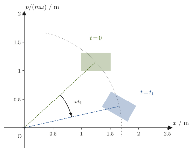

Chapter 46Symmetry and Conservation Laws, Poisson Brackets, and Canonical Transformations
In Chapter 43 we learned the Lagrangian formalism, in Chapter 44 we placed it on the deeper foundation of the principle of least action, and in Chapter 45 we rewrote the motion in the language of phase space $(q_i,p_i)$ by means of Hamilton's canonical equations. In this chapter, which concludes Part VI, we see that such “rewriting” is not a mere reformulation for the sake of calculation: it sheds light on the deep relation between symmetry and conservation laws in nature, and it has also prepared a single path leading from classical mechanics to quantum mechanics and statistical mechanics.
In high school physics, the conservation of momentum, the conservation of angular momentum, and the conservation of energy must have appeared as separate, independent laws, in different settings: collisions, circular motion, and work and energy. From the standpoint of analytical mechanics, however, these three conservation laws are merely different manifestations of a single principle: “the Lagrangian $L$ has a certain kind of symmetry (translation in space, rotation in space, translation in time).” The statement that asserts this remarkable unification is Noether's theorem, published in 1918 by the mathematician Emmy Noether (1882–1935).
In this chapter we further recast the canonical equations $\dot q_i=\pdiff{H}{p_i},\ \dot p_i=-\pdiff{H}{q_i}$ into a single operation that treats $q_i$ and $p_i$ on an equal footing—the Poisson bracket $\{A,B\}$ (defined in Section 46.3). This rewriting is not just a tidying-up of notation. Here we catch a first glimpse of the fact that the fundamental relation of the Poisson bracket, $\{q_i,p_j\}=\delta_{ij}$ ($\delta_{ij}$ is the symbol that equals 1 when $i=j$ and 0 when $i\neq j$), corresponds exactly, under the replacement $\{\ ,\ \}\to\frac1{i\hbar}[\ ,\ ]$, to the commutation relation $[\hat q_i,\hat p_j]=i\hbar\delta_{ij}$ of quantum mechanics ($[\hat q,\hat p]=\hat q\hat p-\hat p\hat q$ is the difference obtained when the order of multiplication is interchanged; it is studied in quantum mechanics, and it is the mathematical source of the uncertainty principle). (Quantum mechanics itself is studied in a separate textbook, so in this chapter we only point out that the correspondence exists.) We also touch on the freedom of canonical transformations, which replace the pair $(q,p)$ by another pair of variables $(Q,P)$ while preserving the form of the canonical equations, and on its consequence, Liouville's theorem (the theorem stating that, in phase space—the space that combines positions and momenta—the size of the region occupied by a collection of many initial conditions does not change as time passes). Liouville's theorem is the quiet workhorse that underlies counting microstates by the volume of phase space in Section 48.2, and thinking about the principle of equal a priori probability in the language of phase space in Section 48.4.
- The definition of a cyclic coordinate (a generalized coordinate that the Lagrangian does not contain explicitly), and the fact that the corresponding generalized momentum is conserved. A look back, in the language of the Lagrangian formalism, at the conservation of angular momentum in planetary motion (Kepler's second law)
- The definition of the energy function $h\equiv\sum_i\dot q_i\pdiff{L}{\dot q_i}-L$, and the fact that $h$ is conserved when $L$ does not contain $t$ explicitly (together with a check that this is exactly the Hamiltonian $H$ of Chapter 45)
- The statement of Noether's theorem and its proof by the point transformation $q_i\to q_i+\varepsilon f_i$. Three concrete examples—spatial translation symmetry → conservation of momentum, spatial rotation symmetry → conservation of angular momentum, and time translation symmetry → conservation of energy—are all derived from the same theorem
- The definition of the Poisson bracket $\{A,B\}=\sum_i\left(\pdiff{A}{q_i}\pdiff{B}{p_i}-\pdiff{A}{p_i}\pdiff{B}{q_i}\right)$ and its basic properties (antisymmetry, linearity, the Leibniz rule, the Jacobi identity); the fundamental bracket $\{q_i,p_j\}=\delta_{ij}$, the unified formula for time evolution $\dd A/\dd t=\{A,H\}+\pdiff{A}{t}$, the brackets of angular momentum $\{L_x,L_y\}=L_z$, and the fact that the bracket of two conserved quantities is again a conserved quantity (Poisson's theorem)
- The idea of a canonical transformation, the proof of the criterion $\{Q,P\}=1$, an introduction to generating functions, and the fact that a transformation that interchanges the roles of coordinates and momenta can also be a canonical transformation
- A proof of Liouville's theorem (conservation of phase-space volume) from the fact that the divergence of the Hamiltonian flow is 0, and its connection to statistical mechanics in Chapter 48 (the Liouville equation $\pdiff{\rho}{t}=-\{\rho,H\}$). A note on the name and the place of the Hamilton–Jacobi equation, a brief mention of the bridge to quantum mechanics ($\{\ ,\ \}\leftrightarrow[\ ,\ ]/i\hbar$), and a summing-up of Part VI
Source notes: This chapter supplements material not in the notes. Related notes: Yasuhide Mochizuki's “Physics Notes: Analytical Mechanics” as a whole (especially the place in the planetary-motion example where θ does not appear explicitly).
46.1 Cyclic Coordinates and the Energy Function — The First Face of Conserved Quantities
Lagrange's equations, which we learned in Chapter 43, written in terms of generalized coordinates $q_i$ and generalized velocities $\dot q_i$, have the form
$$ \diff{}{t}\left(\pdiff{L}{\dot q_i}\right)-\pdiff{L}{q_i}=0 \qquad (i=1,2,\ldots,n) $$The quantity $\pdiff{L}{\dot q_i}$ in the first term on the left-hand side is the generalized momentum $p_i$ (Chapter 43). Now suppose that, for some coordinate $q_k$, the function $L$ does not contain $q_k$ itself (although it may contain $\dot q_k$). What happens then?
This situation is exactly that of the cyclic coordinate (Definition 45.3) that we introduced in Section 45.6 in the language of the Hamiltonian ($\partial H/\partial q_k=0$). As we saw in Section 45.2, $\partial H/\partial q_k=-\partial L/\partial q_k$, so “$H$ does not contain $q_k$” and “$L$ does not contain $q_k$” are equivalent, and whichever way we define it, the same coordinates turn out to be cyclic. In this chapter we state the form written in the language of the Lagrangian as Definition 46.1 and Theorem 46.1 (this prepares for Noether's theorem in Section 46.2), and we dispose of the proof in a single line from Lagrange's equations. For an explanation, in the language of the Hamiltonian formalism, of why the choice of coordinates makes a conservation law “visible,” see Section 45.6.
About the notation
In this chapter, $L$ is the Lagrangian, and the components of the angular momentum are distinguished by subscripts, $L_x,L_y,L_z$ (and $p_\theta$ for planetary motion). We use $J$ for conserved quantities (to distinguish it from $I$, the moment of inertia). The generalized force $Q_i$ of Chapter 43 is not used in this chapter, and $Q,P$ in Section 46.4 denote the transformed coordinates and momenta. To avoid duplicating symbols, the total-differential term that appears in $\delta L$ in Noether's theorem in Section 46.2 is written $\Lambda$, and $K$ is reserved for the transformed Hamiltonian in Sections 46.4 and 46.5. Also, $S$ denotes, as with the action of Chapter 44, Hamilton's principal function of Section 46.5 (the action evaluated along the motion).
Definition 46.1: Cyclic coordinate (Lagrangian version; the same coordinate as in Definition 45.3)
If the Lagrangian $L(q_1,\ldots,q_n,\dot q_1,\ldots,\dot q_n,t)$ does not explicitly contain a generalized coordinate $q_k$, that is, if
\begin{equation} \pdiff{L}{q_k}=0 \label{eq:46-cyclic-def} \end{equation}holds, then $q_k$ is called a cyclic coordinate (also called an ignorable coordinate).
Theorem 46.1: The momentum corresponding to a cyclic coordinate is conserved (Lagrangian version of Theorem 45.4)
If $q_k$ is a cyclic coordinate, then the generalized momentum $p_k=\pdiff{L}{\dot q_k}$ conjugate to it is constant in time:
\begin{equation} \diff{p_k}{t}=0 \label{eq:46-cyclic-conserved} \end{equation}Proof. The right-hand side of Lagrange's equation $\diff{}{t}\left(\pdiff{L}{\dot q_k}\right)=\pdiff{L}{q_k}$ is 0 by Definition 46.1, so $\dd p_k/\dd t=0$.
Let us check this result with the planetary motion treated in Section 44.3 and Example 45.7 (the same argument in the Hamiltonian formalism is given in Example 45.7). Taking the polar coordinates $(r,\theta)$ in the orbital plane as the generalized coordinates, the Lagrangian of a planet of mass $m$ moving around a star of mass $M$ (fixed at the origin) is
\begin{equation} L=T-U=\frac12m\left(\dot r^2+r^2\dot\theta^2\right)+\frac{GMm}{r} \label{eq:46-planet-L} \end{equation}Since $L$ does not contain $\theta$ itself (it contains $\dot\theta$ but not $\theta$), $\theta$ is a cyclic coordinate, and this expresses the rotational symmetry of the central force field (the magnitude of the gravitational attraction does not depend on the azimuthal angle $\theta$). By Theorem 46.1, the momentum conjugate to $\theta$,
\begin{equation} p_\theta=\pdiff{L}{\dot\theta}=mr^2\dot\theta \label{eq:46-p-theta} \end{equation}is conserved. This is precisely the magnitude of the angular momentum, $L_z=|\bm r\times\bm p|=mr^2\dot\theta$ (Section 2.5), and it is a restatement, in the Lagrangian formalism, of Kepler's second law (constant areal velocity) that we learned in Section 8.1.
Example 46.1: Numerical check of angular momentum conservation and Kepler's second law
A comet moves around the Sun in an elliptical orbit. At perihelion (the point closest to the Sun), its distance from the Sun is $r_{\rm p}=0.60\ \mathrm{au}$, and its speed there is $v_{\rm p}=51.8\ \mathrm{km/s}$. If its distance from the Sun at aphelion (the point farthest from the Sun) is $r_{\rm a}=6.0\ \mathrm{au}$, find its speed $v_{\rm a}$ at aphelion. (The comet is fictitious, but $v_{\rm p}$ is exactly the value that corresponds to an elliptical orbit through these two points under the Sun's gravity.)
Solution. Perihelion and aphelion are the points of the orbit that are closest to and farthest from the Sun, so the radial coordinate $r$ takes an extremum there. At an extremum $\dot r=0$, so at these two points the velocity has no radial component and points entirely in the azimuthal direction; that is, $v=r\dot\theta$. Therefore, from the conservation of angular momentum, $p_\theta=mr^2\dot\theta=mrv=$ constant, we have
$$ r_{\rm p}v_{\rm p}=r_{\rm a}v_{\rm a} $$(this is Eq. \eqref{eq:46-p-theta} with both sides divided by $m$ and $v=r\dot\theta$ substituted; note that the result does not depend on $m$). Solving this for $v_{\rm a}$,
$$ v_{\rm a}=\frac{r_{\rm p}v_{\rm p}}{r_{\rm a}}=\frac{0.60\ \mathrm{au}\times51.8\ \mathrm{km/s}}{6.0\ \mathrm{au}}=5.18\ \mathrm{km/s} $$At aphelion, which is ten times farther from the Sun, the speed is $1/10$ of that at perihelion. This is precisely the content of Kepler's second law (constant areal velocity): a planet moves fast where it is near the Sun and slowly where it is far. Moreover, if we recompute the speed at perihelion from the conservation of energy using the Sun's $GM=1.327\times10^{20}\ \mathrm{m^3/s^2}$, we obtain $v_{\rm p}=\sqrt{2GMr_{\rm a}/(r_{\rm p}(r_{\rm a}+r_{\rm p}))}\approx51.8\ \mathrm{km/s}$, which agrees with the value given ($1\ \mathrm{au}=1.496\times10^{11}\ \mathrm{m}$).
Next, let us construct another conserved quantity, independent of cyclic coordinates, again using only Lagrange's equations of Chapter 43. Using all of the generalized coordinates $q_1,\ldots,q_n$, we define the following quantity.
Definition 46.2: Energy function
For a Lagrangian $L(q,\dot q,t)$, we call
\begin{equation} h(q,\dot q,t)\equiv\sum_{i=1}^n\dot q_i\pdiff{L}{\dot q_i}-L \label{eq:46-energy-func-def} \end{equation}the energy function.
Theorem 46.2: Conservation law for the energy function
If the Lagrangian $L$ does not explicitly contain the time $t$ ($\pdiff{L}{t}=0$), the energy function $h$ is constant in time. In general,
\begin{equation} \diff{h}{t}=-\pdiff{L}{t} \label{eq:46-energy-func-conserved} \end{equation}holds.
Derivation: Theorem 46.2
Using the differentiation rule for composite functions (the chain rule, University Mathematics, Section 6.4), the total derivative of $L(q(t),\dot q(t),t)$ with respect to the time $t$ is
$$ \diff{L}{t}=\sum_i\left(\pdiff{L}{q_i}\dot q_i+\pdiff{L}{\dot q_i}\ddot q_i\right)+\pdiff{L}{t} $$Here, substituting the equation of motion (Lagrange's equation) $\pdiff{L}{q_i}=\diff{}{t}\left(\pdiff{L}{\dot q_i}\right)$ into the first term, we obtain
$$ \diff{L}{t}=\sum_i\left[\diff{}{t}\left(\pdiff{L}{\dot q_i}\right)\dot q_i+\pdiff{L}{\dot q_i}\ddot q_i\right]+\pdiff{L}{t} =\sum_i\diff{}{t}\left(\dot q_i\pdiff{L}{\dot q_i}\right)+\pdiff{L}{t} $$(the last equality retraces the product rule $\diff{}{t}(\dot q_i p_i)=\ddot q_i p_i+\dot q_i\dot p_i$ in reverse). Rearranging, we get
$$ \diff{}{t}\left[\sum_i\dot q_i\pdiff{L}{\dot q_i}-L\right]=-\pdiff{L}{t} $$that is, using the definition in Eq. \eqref{eq:46-energy-func-def}, we obtain $\dd h/\dd t=-\pdiff{L}{t}$. In particular, if $L$ does not explicitly contain $t$, the right-hand side is 0 and $h$ is conserved.
∎
Intuition: What the energy function really is
Comparing $h=\sum_i\dot q_ip_i-L$ in Eq. \eqref{eq:46-energy-func-def} with the Hamiltonian $H=\sum_ip_i\dot q_i-L$ that we learned in Chapter 45, we see that they are exactly the same expression; the only difference is whether $\dot q_i$ is expressed as a function of $p_i$ ($H$) or left as $\dot q_i$ ($h$). In other words, the argument of this section is nothing other than “an anticipation of the same conservation law, in the language of the Lagrangian formalism alone, before carrying out the replacement $\dot q_i\to p_i$ (the Legendre transformation).”
Is $h$ then really the energy? Consider a system (a natural system) in which the kinetic energy $T$ is a quadratic form in the generalized velocities, $T=\frac12\sum_{i,j}m_{ij}(q)\dot q_i\dot q_j$, and the potential energy $U$ does not depend on the velocities. Since $T$ is a homogeneous function of degree two in $\dot q$, Euler's theorem on homogeneous functions, $\sum_i\dot q_i\pdiff{T}{\dot q_i}=2T$, holds (we will verify this in Exercise 46.2). Since $L=T-U$ and $\pdiff{L}{\dot q_i}=\pdiff{T}{\dot q_i}$,
$$ h=\sum_i\dot q_i\pdiff{T}{\dot q_i}-(T-U)=2T-T+U=T+U $$and for a natural system, as we saw in Section 45.3, $h=H=T+U$ (the mechanical energy). For a system in which the constraints move with time, $h$ does not coincide with $T+U$ (Example 46.5), so we call $h$ the “energy function” to distinguish the two.
Example 46.2: Energy conservation and the maximum deflection angle of a simple pendulum
Consider a simple pendulum consisting of a bob of mass $m$ attached to a string of length $\ell$. Let $\theta$ be the deflection angle (measured from the vertically downward direction); then the Lagrangian is $L=\frac12m\ell^2\dot\theta^2-mg\ell(1-\cos\theta)$, which does not explicitly contain $t$. If the bob is set swinging so that its speed at the lowest point ($\theta=0$) is $v_0=1.4\ \mathrm{m/s}$, find the maximum deflection angle $\theta_{\max}$ that the bob reaches (the angle at which the angular velocity $\dot\theta=0$). Take the gravitational acceleration to be $g=9.8\ \mathrm{m/s^2}$ and $\ell=0.50\ \mathrm{m}$.
Solution. Since $L$ does not explicitly contain $t$, by Theorem 46.2 the energy function $h=\frac12m\ell^2\dot\theta^2+mg\ell(1-\cos\theta)$ ($=T+U$, with the reference level of the potential energy taken at the lowest point) is conserved. Setting the values of $h$ equal at the lowest point ($\theta=0,\ \dot\theta=v_0/\ell$) and at the point of maximum deflection ($\theta=\theta_{\max},\ \dot\theta=0$), we get
$$ \frac12mv_0^2+0=0+mg\ell(1-\cos\theta_{\max}) $$Dividing both sides by $m$ and solving for $\theta_{\max}$,
$$ \cos\theta_{\max}=1-\frac{v_0^2}{2g\ell}=1-\frac{(1.4\ \mathrm{m/s})^2}{2\times9.8\ \mathrm{m/s^2}\times0.50\ \mathrm{m}}=1-\frac{1.96}{9.8}=1-0.20=0.80 $$ $$ \therefore\ \theta_{\max}=\arccos(0.80)\approx0.6435\ \mathrm{rad}\approx36.9^\circ $$The formula for the period of a simple pendulum, $T_0=2\pi\sqrt{\ell/g}$ (Section 7.2), is an approximation valid for small amplitudes, whereas the conservation of energy, $h=T+U=$ constant, used here holds exactly regardless of the size of the amplitude, and is the more fundamental relation.
Example 46.3: Deriving Kepler's third law from the effective potential and the circular-orbit condition
For the planetary Lagrangian of Eq. \eqref{eq:46-planet-L}, write the conserved angular momentum as $p_\theta$ (a constant). (In Chapter 8 the angular momentum was written $L$, but since $L$ in this chapter is the Lagrangian, we use the symbol $p_\theta$ of the conjugate momentum.) Since $\dot\theta=p_\theta/(mr^2)$, substituting this into Lagrange's equation in the $r$ direction, $m\ddot r=mr\dot\theta^2-GMm/r^2$, and rearranging, we obtain, as a motion in the radial direction alone,
$$ m\ddot r=-\pdiff{U_{\rm eff}}{r},\qquad U_{\rm eff}(r)=\frac{p_\theta^2}{2mr^2}-\frac{GMm}{r} $$that is, an effective potential appears (the same quantity as the one we learned in Section 8.4; for its graph see Figure 8.5). The condition for a circular orbit ($r=r_0=$ constant) is $\ddot r=0$, that is, $U_{\rm eff}'(r_0)=0$. From this, derive the relation (Kepler's third law) between the radius $r_0$ of the circular orbit and the angular velocity $\omega=\dot\theta=p_\theta/(mr_0^2)$ of that orbit.
Solution. Setting $U_{\rm eff}'(r)=-p_\theta^2/(mr^3)+GMm/r^2$ equal to 0, we get
$$ -\frac{p_\theta^2}{mr_0^3}+\frac{GMm}{r_0^2}=0 \quad\Longrightarrow\quad p_\theta^2=GMm^2r_0 $$On the other hand, the angular velocity of the circular orbit is $\omega=p_\theta/(mr_0^2)$, so substituting $p_\theta=m\omega r_0^2$ into the equation above,
$$ (m\omega r_0^2)^2=GMm^2r_0 \quad\Longrightarrow\quad \omega^2r_0^4=GMr_0 \quad\Longrightarrow\quad \omega^2=\frac{GM}{r_0^3} $$Letting $T_{\rm orb}$ be the period, $T_{\rm orb}=2\pi/\omega$, so substituting $\omega^2=4\pi^2/T_{\rm orb}^2$,
$$ \frac{4\pi^2}{T_{\rm orb}^2}=\frac{GM}{r_0^3} \quad\Longrightarrow\quad T_{\rm orb}^2=\frac{4\pi^2}{GM}r_0^3 $$That is, “the square of the period is proportional to the cube of the orbital radius”—Kepler's third law itself has been rederived from the extremum condition of the effective potential (the circular-orbit condition). Dimensional check: the unit of $GM$ is $\mathrm{m^3/s^2}$, so the right-hand side comes out in units of $\mathrm{s^2}$, which agrees with the left-hand side $T_{\rm orb}^2$. For the proof of Kepler's third law for general elliptical orbits, see Section 8.3.
The same result can also be derived by directly substituting the circular-orbit condition $\dot r=\ddot r=0$ into the radial equation $m(\ddot r-r\dot\theta^2)=-GMm/r^2$ (Example 44.5). That method takes the viewpoint of “balance of forces (centripetal force = gravitational attraction),” whereas the present example takes the viewpoint of “an extremum of the effective potential ($U_{\mathrm{eff}}'(r_0)=0$, the bottom of a valley of the one-degree-of-freedom potential energy)”; although the viewpoints differ, they arrive at the same equation.
46.2 Symmetry and Conservation Laws — Noether's Theorem
In Section 46.1 we saw that when a particular coordinate $q_k$ is a cyclic coordinate ($L$ does not contain $q_k$ explicitly), the conjugate momentum $p_k$ is conserved. In the example of planetary motion, this was a manifestation of the rotational symmetry expressed by the statement “the gravitational attraction does not depend on the azimuthal angle $\theta$.” In this section we generalize this idea. Starting from the question “under what continuous transformations does $L$ remain unchanged?”, we learn a method for producing conserved quantities mechanically—Noether's theorem.
First, we prepare to express a “transformation” by a formula. We change the motion described by the generalized coordinates $q_i(t)$ slightly, by using a real parameter $\varepsilon$ (an infinitesimal quantity): $$ q_i(t)\ \longrightarrow\ q_i(t)+\varepsilon f_i $$ The function $f_i$ that determines the direction and magnitude of the displacement $\delta q_i=\varepsilon f_i$ is called the generator of this transformation. For example, $f=1$ for the transformation that translates the whole system by $\varepsilon$ in the $x$ direction; $(f_x,f_y)=(-y,x)$ for the transformation that rotates it by a small angle $\varepsilon$ about the $z$ axis; and $f_i=\dot q_i$ for the transformation that shifts time by $\varepsilon$, $q_i(t)\to q_i(t+\varepsilon)\approx q_i(t)+\varepsilon\dot q_i$ (a generator may be a function of $q_i,\dot q_i,t$). Since $\varepsilon$ is a constant independent of time, the change in the velocity is $\delta\dot q_i=\diff{}{t}(\varepsilon f_i)=\varepsilon\dot f_i$. We write the change in $L$ after the transformation, in the first-order approximation, as \begin{equation} \delta L\equiv\varepsilon\sum_i\left(\pdiff{L}{q_i}f_i+\pdiff{L}{\dot q_i}\dot f_i\right) \label{eq:46-noether-dL} \end{equation} (the first-order approximation of a function of several variables, University Mathematics, Section 6.3).
Theorem 46.3: Noether's theorem
Suppose that, under the transformation $q_i\to q_i+\varepsilon f_i$, the $\delta L$ in Eq. \eqref{eq:46-noether-dL} can be written, for any path $q_i(t)$ (whether or not it satisfies the equations of motion), in the form
\begin{equation} \delta L=\varepsilon\diff{\Lambda}{t} \label{eq:46-noether-cond} \end{equation}(here $\Lambda$ (lambda) is a function of $q_i,\dot q_i,t$, a term that allows $L$ to change by a total differential; in particular, $\Lambda=0$ is the case in which the value of $L$ is completely invariant). Then, for the actual motion that satisfies the equations of motion (Lagrange's equations), the quantity
\begin{equation} J\equiv\sum_i\pdiff{L}{\dot q_i}\,f_i-\Lambda=\sum_ip_if_i-\Lambda \label{eq:46-noether-conserved} \end{equation}is constant in time (a conserved quantity).
Derivation: Theorem 46.3
The $\delta L$ in Eq. \eqref{eq:46-noether-dL} is an identity that expresses the change in $L$ when $q_i,\dot q_i$ are varied arbitrarily (independently of the equations of motion), and the assumption \eqref{eq:46-noether-cond} is likewise an identity. From here on, we consider only the actual motion that satisfies the equations of motion. In an actual motion, Lagrange's equation $\pdiff{L}{q_i}=\diff{}{t}\left(\pdiff{L}{\dot q_i}\right)=\dot p_i$ holds, so substituting this and $\pdiff{L}{\dot q_i}=p_i$ into Eq. \eqref{eq:46-noether-dL} gives
$$ \delta L=\varepsilon\sum_i\left(\dot p_if_i+p_i\dot f_i\right)=\varepsilon\sum_i\diff{}{t}\bigl(p_if_i\bigr)=\varepsilon\diff{}{t}\left(\sum_ip_if_i\right) $$(the second equality is the product rule $\diff{}{t}(p_if_i)=\dot p_if_i+p_i\dot f_i$ read in reverse). Since this equals the $\varepsilon\,\dd \Lambda/\dd t$ in the assumption \eqref{eq:46-noether-cond}, dividing by $\varepsilon$ and moving terms to one side gives
$$ \diff{}{t}\left(\sum_ip_if_i-\Lambda\right)=0 $$that is, $J=\sum_ip_if_i-\Lambda$ is constant in time. In the case of one degree of freedom with $f=f(q)$, we have $\dot f=f'(q)\dot q$, and the computation amounts to showing that $\delta L=\varepsilon\left[\pdiff{L}{q}f(q)+\pdiff{L}{\dot q}f'(q)\dot q\right]$ becomes $\varepsilon\,\dd(p f)/\dd t$ under the equation of motion.
∎
Intuition: What does Noether's theorem say?
Noether's theorem asserts that two concepts that at first sight seem to be entirely different matters—“symmetry” (the property that the Lagrangian does not change under a transformation, or changes only by a total differential) and “conservation law” (the property that some quantity does not change as time passes)—are in fact two sides of the same coin. The argument about cyclic coordinates (Section 46.1) corresponds to the simplest transformation, $f_k=1$ (a translation of the coordinate $q_k$ itself, $\delta q_k=\varepsilon$): in this case Eq. \eqref{eq:46-noether-dL} becomes $\delta L=\varepsilon\pdiff{L}{q_k}=0$, and $\Lambda=0$, $J=p_k$. Below, we apply Theorem 46.3 to somewhat more general transformations—translation in space, rotation in space, and translation in time.
46.2.1 Spatial translation symmetry → conservation of momentum
Consider a system of $N$ particles (point masses), and let $(x_a,y_a,z_a)$ be the rectangular (Cartesian) coordinates of particle $a$ ($a=1,\ldots,N$). In a system on which only internal forces act (forces acting between the particles, for example spring forces, universal gravitation, and the Coulomb force) and there is no external force, the potential energy $U$ is determined only by the relative positions of the particles, and $U$ (and therefore $L=T-U$) does not change even if all the particles are displaced by the same amount. If we apply Theorem 46.3 to this as a uniform infinitesimal translation in the $x$ direction, $x_a\to x_a+\varepsilon$ (with $y_a,z_a$ unchanged), the generator is $f_{x_a}=1$ (common to all particles) and $\Lambda=0$. Hence the conserved quantity is
\begin{equation} J=\sum_a\pdiff{L}{\dot x_a}\times1=\sum_ap_{x,a}=P_x \label{eq:46-noether-translation} \end{equation}—none other than the total momentum $P_x$ in the $x$ direction. The same argument works for the $y,z$ directions, so spatial translation symmetry yields conservation of momentum, $\bm P=\sum_a\bm p_a=$ constant (Section 2.4). Note that when external forces are present, translation symmetry is lost (partly or entirely). For example, under uniform gravity $U=mgz$, only translations in the $x,y$ directions remain as symmetries, so $P_x,P_y$ are conserved but $P_z$ is not (Example 46.6).
46.2.2 Spatial rotation symmetry → conservation of angular momentum
Next, consider the transformation that rotates all the particles by the same small angle $\varepsilon$ about the $z$ axis. Under a rotation in the $xy$ plane, the coordinates of each particle change, in the first-order approximation, as
$$ x_a\to x_a-\varepsilon y_a,\qquad y_a\to y_a+\varepsilon x_a $$(this is the first-order approximation, obtained by differentiating $x=r\cos\theta,\ y=r\sin\theta$, of the transformation that does not change the radius $\sqrt{x_a^2+y_a^2}$ and only increases the angle by $\varepsilon$). Hence the generators are $f_{x_a}=-y_a,\ f_{y_a}=x_a$ ($f_{z_a}=0$), and the changes in the velocities are $\dot f_{x_a}=-\dot y_a,\ \dot f_{y_a}=\dot x_a$. Let us check that $L$ is invariant under this transformation ($\Lambda=0$). The change in the kinetic energy $T=\frac12\sum_am_a(\dot x_a^2+\dot y_a^2+\dot z_a^2)$ is
$$ \delta T=\varepsilon\sum_am_a\bigl[\dot x_a(-\dot y_a)+\dot y_a\dot x_a\bigr]=0 $$If the potential energy $U$ is a function only of quantities whose values do not change under rotation, such as the distances $\abs{\bm r_a-\bm r_b}$ between particles or the distances $\abs{\bm r_a}$ from the origin, then $\delta U=0$ (for example, for a single particle in a central force $U(r)$, $r=\sqrt{x^2+y^2+z^2}$, we have $\pdiff{U}{x}=U'(r)\,x/r,\ \pdiff{U}{y}=U'(r)\,y/r$, so $\delta U=\varepsilon\left[U'(r)\frac{x}{r}(-y)+U'(r)\frac{y}{r}x\right]=0$). Thus $\delta L=0$, that is, $\Lambda=0$, and by Theorem 46.3 the conserved quantity is
\begin{equation} J=\sum_a\left[\pdiff{L}{\dot x_a}(-y_a)+\pdiff{L}{\dot y_a}x_a\right]=\sum_a\left(x_ap_{y,a}-y_ap_{x,a}\right)=\sum_aL_{z,a}=L_z \label{eq:46-noether-rotation} \end{equation}—the total angular momentum $L_z$ about the $z$ axis (here $L_z$ is the $z$ component of the angular momentum vector, a quantity distinct from the Lagrangian $L$; we distinguish them by the presence or absence of the subscript). Carrying this out for planetary motion (one particle, central force) gives conservation of angular momentum in a form that agrees exactly with $p_\theta=mr^2\dot\theta$ (the expression in polar coordinates) seen in Section 46.1. From the rotation about the $x$ axis ($\delta y=-\varepsilon z,\ \delta z=\varepsilon y$) the same calculation gives $L_x=yp_z-zp_y$ as a conserved quantity, and from the rotation about the $y$ axis ($\delta z=-\varepsilon x,\ \delta x=\varepsilon z$) it gives $L_y=zp_x-xp_z$.
46.2.3 Time translation symmetry → conservation of energy
The time translation symmetry—“the laws of physics do not change if we shift the time”—can also be treated by the same Theorem 46.3. Consider the motion $q_i(t+\varepsilon)$ obtained by shifting the motion $q_i(t)$ in time by $\varepsilon$. In the first-order approximation $q_i(t+\varepsilon)=q_i(t)+\varepsilon\dot q_i$, so the generator is $f_i=\dot q_i$ (a generator that depends on the velocity), and $\dot f_i=\ddot q_i$. The change in $L$ in this case is, by Eq. \eqref{eq:46-noether-dL} and the chain rule,
$$ \delta L=\varepsilon\sum_i\left(\pdiff{L}{q_i}\dot q_i+\pdiff{L}{\dot q_i}\ddot q_i\right)=\varepsilon\left(\diff{L}{t}-\pdiff{L}{t}\right) $$(we used $\dd L/\dd t=\sum_i(\pdiff{L}{q_i}\dot q_i+\pdiff{L}{\dot q_i}\ddot q_i)+\pdiff{L}{t}$). If $L$ does not contain $t$ explicitly, then $\pdiff{L}{t}=0$; this is precisely the mathematical expression of the time translation symmetry that “the functional form of $L$ is the same wherever we take the origin of time,” and we get $\delta L=\varepsilon\,\dd L/\dd t$. It is not the case that the value of $L$ itself stays unchanged; it changes by the total time derivative of $L$ itself, so this corresponds to the case $\Lambda=L$ in condition \eqref{eq:46-noether-cond}. By Theorem 46.3 the conserved quantity is
\begin{equation} J=\sum_ip_i\dot q_i-L=h \label{eq:46-noether-time} \end{equation}—the energy function $h$ (the mechanical energy $T+U$ for a natural system), which agrees with the conservation law derived directly from the equations of motion as Theorem 46.2 in Section 46.1. Thus we have seen that the three laws that were learned separately in high school physics—conservation of momentum, conservation of angular momentum, and conservation of energy—are all derived by the same Theorem 46.3 from the symmetries “translation in space,” “rotation in space,” and “translation in time.”
| Symmetry | Generator $f_i$ | $\Lambda$ | Conserved quantity $J$ |
|---|---|---|---|
| Spatial translation ($x$ direction) | $f_{x_a}=1$ | $0$ | Momentum $P_x=\sum_ap_{x,a}$ |
| Spatial rotation (about the $z$ axis) | $f_{x_a}=-y_a,\ f_{y_a}=x_a$ | $0$ | Angular momentum $L_z=\sum_a(x_ap_{y,a}-y_ap_{x,a})$ |
| Time translation | $f_i=\dot q_i$ | $L$ | Energy function $h=\sum_ip_i\dot q_i-L$ ($T+U$ for a natural system) |
Example 46.4: Conservation of the total momentum in a two-particle spring system
On a smooth horizontal surface, two objects of masses $m_1,m_2$ are connected by a spring of natural length $\ell_0$ and spring constant $k$ (no external force). Taking the coordinates $x_1,x_2$ (along a straight line), the Lagrangian is
$$ L=\frac12m_1\dot x_1^2+\frac12m_2\dot x_2^2-\frac12k(x_2-x_1-\ell_0)^2 $$(1) Confirm that this Lagrangian is invariant under the translation symmetry $x_1\to x_1+\varepsilon,\ x_2\to x_2+\varepsilon$. (2) Using Theorem 46.3, find the conserved quantity (the total momentum). (3) Actually write down Lagrange's equations, and confirm directly that the quantity in (2) is indeed conserved.
Solution. (1) If $x_1\to x_1+\varepsilon,\ x_2\to x_2+\varepsilon$, then $\dot x_1,\dot x_2$ do not change, and $x_2-x_1-\ell_0\to(x_2+\varepsilon)-(x_1+\varepsilon)-\ell_0=x_2-x_1-\ell_0$ (the $\varepsilon$'s cancel out), so the value of $L$ does not change at all ($\delta L=0$, $\Lambda=0$). Hence this transformation is a symmetry, and the generators are $f_{x_1}=f_{x_2}=1$.
(2) By Eq. \eqref{eq:46-noether-conserved}, the conserved quantity is
$$ J=\pdiff{L}{\dot x_1}\times1+\pdiff{L}{\dot x_2}\times1=m_1\dot x_1+m_2\dot x_2=p_1+p_2=P $$—the total momentum $P$.
(3) Lagrange's equations for $x_1,x_2$ are, respectively,
$$ m_1\ddot x_1=-k(x_2-x_1-\ell_0)\times(-1)=k(x_2-x_1-\ell_0),\qquad m_2\ddot x_2=-k(x_2-x_1-\ell_0) $$(we obtained the restoring force of the spring by partially differentiating the potential energy $U=\frac12k(x_2-x_1-\ell_0)^2$ with respect to $x_1,x_2$ in turn; note that the signs are exactly opposite). Adding the two equations side by side, the right-hand sides cancel and we get
$$ m_1\ddot x_1+m_2\ddot x_2=0 \quad\Longrightarrow\quad \diff{}{t}(m_1\dot x_1+m_2\dot x_2)=\diff{P}{t}=0 $$so, as predicted in (2), it has been confirmed directly that the total momentum $P$ is conserved. Notice that the familiar conclusion of the Newtonian formulation—that the total momentum is conserved because the internal force (the spring force) exerts forces of equal magnitude and opposite direction on the two objects, the law of action and reaction (Section 2.3)—has been obtained here from a different angle, namely “translation symmetry.”
Example 46.5: Symmetry breaking and non-conservation of energy
Suppose that the pivot of a simple pendulum is kept shaken periodically in the horizontal direction by an external device, as $x_0(t)=A_0\cos\Omega t$ ($A_0,\Omega$ are constants). Write down the Lagrangian of this system, and explain, in the language of Noether's theorem, why the energy function $h$ is not conserved.
Solution. The position of the bob can be written, using the position $x_0(t)$ of the pivot and the deflection angle $\theta$, as $x=x_0(t)+\ell\sin\theta,\ y=-\ell\cos\theta$. The velocity is $\dot x=\dot x_0+\ell\dot\theta\cos\theta,\ \dot y=\ell\dot\theta\sin\theta$, so the kinetic energy is
$$ T=\frac12m\left[(\dot x_0+\ell\dot\theta\cos\theta)^2+(\ell\dot\theta\sin\theta)^2\right]=\frac12m\left[\ell^2\dot\theta^2+2\ell\dot\theta\,\dot x_0\cos\theta+\dot x_0^2\right] $$(we used $\cos^2\theta+\sin^2\theta=1$). Since the potential energy is $U=-mg\ell\cos\theta$, the Lagrangian is
$$ L=\frac12m\left[\ell^2\dot\theta^2+2\ell\dot\theta\,\dot x_0\cos\theta+\dot x_0^2\right]+mg\ell\cos\theta,\qquad \dot x_0=-A_0\Omega\sin\Omega t $$This $L$ contains the time $t$ explicitly through the velocity $\dot x_0(t)$ of the pivot. Fixing $\theta,\dot\theta$ and partially differentiating with respect to $t$ (note that $\pdiff{\dot x_0}{t}=\ddot x_0=-A_0\Omega^2\cos\Omega t$), we obtain
$$ \pdiff{L}{t}=m\left(\ell\dot\theta\cos\theta+\dot x_0\right)\ddot x_0=mA_0\Omega^2\cos\Omega t\,\bigl(A_0\Omega\sin\Omega t-\ell\dot\theta\cos\theta\bigr) $$which in general is not zero. This means that “if we shift the time, the value of $L$ itself for the same $\theta,\dot\theta$ changes”—that is, the time translation symmetry is broken. Therefore, by Theorem 46.2 (Eq. \eqref{eq:46-energy-func-conserved}), the energy function of this system (computing $h=\sum\dot q\pdiff{L}{\dot q}-L$ gives $h=\frac12m\ell^2\dot\theta^2-\frac12m\dot x_0^2-mg\ell\cos\theta$) satisfies
$$ \diff{h}{t}=-\pdiff{L}{t}\neq0 $$so it is not conserved. Physically, this is because the external device that moves the pivot (a motor, for example) does work on the bob and continually injects or absorbs energy; the energy does not vanish (for the system and the device taken together, it is conserved).
Let us also be careful about the logic. What Noether's theorem asserts is “if there is a symmetry, there is a conserved quantity,” not “if a symmetry is broken, the conserved quantity is necessarily lost.” When a symmetry is broken, the conserved quantity corresponding to that symmetry generally ceases to be conserved, but there are cases in which a conserved quantity due to another (hidden) symmetry remains (for example, the Kepler problem with an inverse-square force has, apart from the one associated with rotational symmetry, a conserved quantity called the Laplace–Runge–Lenz vector).
Example 46.6: Quantities that are conserved and not conserved under uniform gravity
The Lagrangian of a particle of mass $m$ moving under uniform gravity (gravitational acceleration $g$, with the vertically upward direction taken as the $z$ axis) is $L=\frac12m(\dot x^2+\dot y^2+\dot z^2)-mgz$. (1) What quantities are conserved under translations in the $x,y$ directions? (2) How does $L$ change under a translation in the $z$ direction? Is the $z$ component $p_z$ of the momentum conserved? (3) What quantity is conserved when the general form of Theorem 46.3 ($\Lambda\neq0$) is applied to the transformation in (2)? (4) If the particle is fixed to the origin by a spring of spring constant $k$ ($U=\frac12kx^2$, one-dimensional), is the momentum conserved under a translation in the $x$ direction?
Solution. (1) If $x\to x+\varepsilon$, then $L$ does not contain $x$, so $\delta L=0$ ($\Lambda=0$). The generator is $f_x=1$, so $J=p_x=m\dot x$ is conserved. Similarly, $p_y=m\dot y$ is conserved from the translation in the $y$ direction.
(2) If $z\to z+\varepsilon$ (generator $f_z=1$), the kinetic energy does not change, and $-mgz$ becomes $-mg(z+\varepsilon)$, so
$$ \delta L=-mg\varepsilon\neq0 $$and $L$ is not invariant. In fact, from Lagrange's equation in the $z$ direction, $\dot p_z=\pdiff{L}{z}=-mg$, $p_z$ changes with time at the rate $-mg$ and is not conserved. Even in “uniform gravity,” because the force ($-mg$) points in the vertical direction, the translation symmetry in the $z$ direction is broken.
(3) However, since $\delta L=-mg\varepsilon$ in (2) is a constant, it can be written in the form of a total time derivative, $-mg\varepsilon=\varepsilon\diff{}{t}(-mgt)$. That is, condition \eqref{eq:46-noether-cond} holds with $\Lambda=-mgt$. By Theorem 46.3 the conserved quantity is
$$ J=p_zf_z-\Lambda=m\dot z+mgt $$This can be checked from the solution for motion with constant acceleration, $\dot z(t)=\dot z(0)-gt$, which gives $m\dot z+mgt=m\dot z(0)$ (a conserved quantity that contains $t$ explicitly).
(4) If $x\to x+\varepsilon$, then $\delta L=-kx\varepsilon\neq0$, and indeed $\dot p_x=-kx$, so $p_x$ is not conserved. This $\delta L$ cannot be written in the form $\varepsilon\,\dd \Lambda/\dd t$ with any $\Lambda$ (for $\dd \Lambda/\dd t=\pdiff{\Lambda}{t}+\dot x\pdiff{\Lambda}{x}+\ddot x\pdiff{\Lambda}{\dot x}$ to equal $-kx$ for an arbitrary motion, comparing the coefficients of $\dot x,\ddot x$ requires $\pdiff{\Lambda}{x}=\pdiff{\Lambda}{\dot x}=0$, and then $\pdiff{\Lambda}{t}=-kx$ would follow, but this is impossible since $\Lambda$ does not contain $x$). Therefore, for a particle fixed by a spring there is no conserved quantity corresponding to the momentum—because the presence of the fixed point destroys the homogeneity of space (the translation symmetry).
Application: Symmetry and conservation laws in quantum mechanics
The idea behind Noether's theorem lives on in quantum mechanics in exactly the same form. In quantum mechanics, physical quantities are represented by operators, and the invariance of the Hamiltonian operator $\hat H$ under a transformation (for example, a spatial translation) is expressed as the statement that $\hat H$ commutes with the operator that generates that transformation (for a translation, the momentum operator $\hat p$); that is, the commutator satisfies $[\hat H,\hat p]=0$. And the vanishing of this commutator is precisely the quantum version of the fact that, in the language of the Poisson bracket that we will meet later in Section 46.3, one can write $\{H,p\}=0$. The same logic, “symmetry → conservation law,” is thus carried over, changing its form, from classical mechanics (Noether's theorem) to quantum mechanics (the commutator vanishes). Since quantum mechanics itself is studied in a separate textbook, here we only point out that the correspondence exists.
46.3 The Poisson Bracket
Hamilton's canonical equations $\dot q_i=\pdiff{H}{p_i},\ \dot p_i=-\pdiff{H}{q_i}$, which we learned in Chapter 45, have a beautiful symmetry: they treat $q_i$ and $p_i$ as equal variables. In this section we introduce an operation called the Poisson bracket (introduced by S. D. Poisson in 1809), which is defined between any two physical quantities on phase space $(q,p)$ (functions of $q,p,t$), and we write the canonical equations and the conservation laws in a unified way using only this one operation.
Definition 46.3: Poisson bracket
For functions $A(q,p,t)$ and $B(q,p,t)$ of the phase-space variables $(q_1,\ldots,q_n,p_1,\ldots,p_n)$, the Poisson bracket $\{A,B\}$ is
\begin{equation} \{A,B\}\equiv\sum_{i=1}^n\left(\pdiff{A}{q_i}\pdiff{B}{p_i}-\pdiff{A}{p_i}\pdiff{B}{q_i}\right) \label{eq:46-poisson-def} \end{equation}by definition.
Caution: Sign convention
This book uses the convention in which $\{q,p\}=+1$ and $\dd A/\dd t=\{A,H\}$ (the same as Goldstein and many other textbooks). In some references the sign of the Poisson bracket is reversed; for example, Landau and Lifshitz's “Mechanics” defines $\{f,g\}=\sum_i\left(\pdiff{f}{p_i}\pdiff{g}{q_i}-\pdiff{f}{q_i}\pdiff{g}{p_i}\right)$. In that convention $\{q,p\}=-1$ and $\dd A/\dd t=\{H,A\}$. When you read another book alongside this one, first check its definition of the bracket.
Intuition: The Poisson bracket is a “mechanical operation”
Eq. \eqref{eq:46-poisson-def} looks complicated, but what it does is simple: “Multiply the partial derivative of $A$ with respect to $q_i$ by the partial derivative of $B$ with respect to $p_i$, multiply the partial derivative of $A$ with respect to $p_i$ by the partial derivative of $B$ with respect to $q_i$, and subtract. Then add this up over all indices $i$”—that is all there is to it. The computation itself is a mechanical operation that anyone can carry out as long as they can take partial derivatives (University Mathematics, Section 6.2), the kind of calculation that becomes second nature with practice.
Theorem 46.4: Basic properties of the Poisson bracket
For functions $A,B,C$ on phase space and constants $a,b$, the Poisson bracket has the following properties:
- Antisymmetry: $\{A,B\}=-\{B,A\}$ (in particular $\{A,A\}=0$)
- Linearity: $\{aA+bB,C\}=a\{A,C\}+b\{B,C\}$
- Leibniz rule: $\{AB,C\}=A\{B,C\}+\{A,C\}B$
- Jacobi identity: $\{A,\{B,C\}\}+\{B,\{C,A\}\}+\{C,\{A,B\}\}=0$
Derivation: Theorem 46.4
Antisymmetry. If we interchange $A$ and $B$ in the formula of Definition 46.3, the order of the two factors in each term is merely swapped, so
$$ \{B,A\}=\sum_i\left(\pdiff{B}{q_i}\pdiff{A}{p_i}-\pdiff{B}{p_i}\pdiff{A}{q_i}\right)=-\sum_i\left(\pdiff{A}{q_i}\pdiff{B}{p_i}-\pdiff{A}{p_i}\pdiff{B}{q_i}\right)=-\{A,B\} $$as one verifies at once (since real numbers can be multiplied in either order, we used $\pdiff{B}{q_i}\pdiff{A}{p_i}=\pdiff{A}{p_i}\pdiff{B}{q_i}$ and so on).
Linearity. This follows immediately by substituting into the formula of Definition 46.3, because partial differentiation is a linear operation ($\pdiff{}{q_i}(aA+bB)=a\pdiff{A}{q_i}+b\pdiff{B}{q_i}$).
Leibniz rule. Substituting the product rule of differentiation, $\pdiff{(AB)}{q_i}=\pdiff{A}{q_i}B+A\pdiff{B}{q_i}$ and $\pdiff{(AB)}{p_i}=\pdiff{A}{p_i}B+A\pdiff{B}{p_i}$, into Definition 46.3 (taking $AB$ as the first argument and $C$ as the second), we obtain
$$ \begin{aligned} \{AB,C\}&=\sum_i\left[\left(\pdiff{A}{q_i}B+A\pdiff{B}{q_i}\right)\pdiff{C}{p_i}-\left(\pdiff{A}{p_i}B+A\pdiff{B}{p_i}\right)\pdiff{C}{q_i}\right]\\ &=A\sum_i\left(\pdiff{B}{q_i}\pdiff{C}{p_i}-\pdiff{B}{p_i}\pdiff{C}{q_i}\right)+\left[\sum_i\left(\pdiff{A}{q_i}\pdiff{C}{p_i}-\pdiff{A}{p_i}\pdiff{C}{q_i}\right)\right]B\\ &=A\{B,C\}+\{A,C\}B \end{aligned} $$(we have merely sorted the terms into those containing $A$ and those containing $B$).
Jacobi identity. Write the phase-space coordinates $(q_1,\ldots,q_n,p_1,\ldots,p_n)$ collectively as $z_1,\ldots,z_{2n}$. For a function $B$, the operation $F\mapsto\{B,F\}$, namely $D_BF\equiv\{B,F\}=\sum_kb_k\pdiff{F}{z_k}$ ($b_k$ is the first-order partial derivative $\pdiff{B}{p_i}$ or $-\pdiff{B}{q_i}$ of $B$), is a first-order differential operation on $F$. Then
$$ \{B,\{C,A\}\}+\{C,\{A,B\}\}=D_BD_CA-D_CD_BA $$(for the second term, $\{A,B\}=-\{B,A\}$ gives $\{C,\{A,B\}\}=-D_CD_BA$). Setting $D_C=\sum_lc_l\pdiff{}{z_l}$ and computing $D_BD_CA=\sum_{k,l}b_k\pdiff{c_l}{z_k}\pdiff{A}{z_l}+\sum_{k,l}b_kc_l\frac{\partial^2A}{\partial z_k\partial z_l}$, we see that the second term, which contains second derivatives of $A$, takes the same value even when $B$ and $C$ are interchanged ($\frac{\partial^2A}{\partial z_k\partial z_l}=\frac{\partial^2A}{\partial z_l\partial z_k}$, by Schwarz's theorem), so it cancels in the difference $D_BD_CA-D_CD_BA$. Therefore the sum of the two terms above contains no second derivatives of $A$. Each term on the left-hand side of the Jacobi identity has the form “a second derivative of one function times first derivatives of the other two functions,” so the only terms containing second derivatives of $A$ are the two above, and these have cancelled. For $B,C$ as well (since the left-hand side is invariant under cyclic permutations of $A,B,C$), the second derivatives cancel in the same way. Since all the second-derivative terms vanish, the left-hand side is 0.
∎
Theorem 46.5: Fundamental Poisson brackets
The Poisson brackets of the canonical variables $q_i,p_i$ themselves (the fundamental Poisson brackets) are
\begin{equation} \{q_i,q_j\}=0,\qquad\{p_i,p_j\}=0,\qquad\{q_i,p_j\}=\delta_{ij} \label{eq:46-fundamental-brackets} \end{equation}Here $\delta_{ij}$ is the Kronecker delta (equal to 1 when $i=j$ and to 0 when $i\neq j$).
Derivation: Theorem 46.5
Neither of $q_i,q_j$ depends on $p$ ($\pdiff{q_i}{p_k}=0$ always holds), so every term of the formula in Definition 46.3 vanishes, and $\{q_i,q_j\}=0$. Similarly, neither of $p_i,p_j$ depends on $q$, so $\{p_i,p_j\}=0$. Finally, computing $\{q_i,p_j\}$ directly from the definition, we have
$$ \{q_i,p_j\}=\sum_k\left(\pdiff{q_i}{q_k}\pdiff{p_j}{p_k}-\pdiff{q_i}{p_k}\pdiff{p_j}{q_k}\right) $$Here, since $q_i,p_j$ are independent canonical variables, $\pdiff{q_i}{q_k}=\delta_{ik}$, $\pdiff{p_j}{p_k}=\delta_{jk}$, $\pdiff{q_i}{p_k}=0$, and $\pdiff{p_j}{q_k}=0$. Substituting these gives
$$ \{q_i,p_j\}=\sum_k\delta_{ik}\delta_{jk}-0=\delta_{ij} $$(in the sum $\sum_k\delta_{ik}\delta_{jk}$, a single term equals 1 only when $k=i$ and $k=j$, that is, only when $i=j$, and all terms are 0 otherwise, so the sum equals $\delta_{ij}$).
∎
Formula 46.1: Poisson brackets with $q_i,p_i$
For any function $A(q,p,t)$, the relations
\begin{equation} \{q_i,A\}=\pdiff{A}{p_i},\qquad\{p_i,A\}=-\pdiff{A}{q_i} \label{eq:46-bracket-with-qp} \end{equation}hold.
Derivation: Formula 46.1
Taking $q_i$ as the first argument in Definition 46.3 and using $\pdiff{q_i}{q_k}=\delta_{ik}$ and $\pdiff{q_i}{p_k}=0$, we obtain
$$ \{q_i,A\}=\sum_k\left(\delta_{ik}\pdiff{A}{p_k}-0\right)=\pdiff{A}{p_i} $$Similarly, taking $p_i$ as the first argument, we have $\pdiff{p_i}{q_k}=0$ and $\pdiff{p_i}{p_k}=\delta_{ik}$, so
$$ \{p_i,A\}=\sum_k\left(0-\delta_{ik}\pdiff{A}{q_k}\right)=-\pdiff{A}{q_i} $$Substituting $A=q_j$ or $A=p_j$ gives Theorem 46.5 as a special case.
∎
Next, let us use the Poisson bracket to express how an arbitrary physical quantity $A(q,p,t)$ on phase space changes with time.
Theorem 46.6: Unified formula for time evolution
For a system moving according to the canonical equations, the time variation of a function $A(q,p,t)$ on phase space can be written as
\begin{equation} \diff{A}{t}=\{A,H\}+\pdiff{A}{t} \label{eq:46-time-evolution} \end{equation}In particular, if $A$ does not contain the time $t$ explicitly ($\pdiff{A}{t}=0$) and $\{A,H\}=0$, then $A$ is a conserved quantity.
Derivation: Theorem 46.6
Taking the total derivative of $A(q(t),p(t),t)$ with respect to the time $t$ by the differentiation rule for composite functions (the chain rule), we obtain
$$ \diff{A}{t}=\sum_i\left(\pdiff{A}{q_i}\dot q_i+\pdiff{A}{p_i}\dot p_i\right)+\pdiff{A}{t} $$Substituting here the canonical equations $\dot q_i=\pdiff{H}{p_i},\ \dot p_i=-\pdiff{H}{q_i}$ (Section 45.2) gives
$$ \diff{A}{t}=\sum_i\left(\pdiff{A}{q_i}\pdiff{H}{p_i}-\pdiff{A}{p_i}\pdiff{H}{q_i}\right)+\pdiff{A}{t}=\{A,H\}+\pdiff{A}{t} $$which proves Eq. \eqref{eq:46-time-evolution} (the last equality is nothing but Definition 46.3 in the case $B=H$).
∎
Intuition: Correspondence with cyclic coordinates and Noether's theorem
Eq. \eqref{eq:46-time-evolution} restates the conservation laws we saw in Sections 46.1 and 46.2 in a unified way. For example, for the momentum $p_k$ conjugate to a cyclic coordinate $q_k$, $H$ does not contain $q_k$ explicitly (Section 45.6), so by Formula 46.1 (Eq. \eqref{eq:46-bracket-with-qp}) we have
$$ \{p_k,H\}=-\pdiff{H}{q_k}=0 $$and so $p_k$ is indeed conserved (computing directly from Definition 46.3 gives $\{p_k,H\}=\sum_i\left(\pdiff{p_k}{q_i}\pdiff{H}{p_i}-\pdiff{p_k}{p_i}\pdiff{H}{q_i}\right)=-\pdiff{H}{q_k}$, where we used $\pdiff{p_k}{q_i}=0$ and $\pdiff{p_k}{p_i}=\delta_{ki}$). As for $H$ itself, antisymmetry (Theorem 46.4) gives $\{H,H\}=-\{H,H\}$, and hence $\{H,H\}=0$ holds automatically. Substituting this into Eq. \eqref{eq:46-time-evolution} with $A=H$ gives $\dd H/\dd t=\pdiff{H}{t}$, and the conclusion we already know, “if $H$ does not contain $t$ explicitly, the energy is conserved” (Theorem 46.2), is reproduced here as well.
Finally, as another important example of the Poisson bracket, let us compute the Poisson brackets among the components of the angular momentum. Take the rectangular coordinates $(x,y,z)$ of a single particle and its momentum $(p_x,p_y,p_z)$ as the canonical variables, and let the components of the angular momentum be $L_x=yp_z-zp_y,\ L_y=zp_x-xp_z,\ L_z=xp_y-yp_x$ (Section 2.5).
Theorem 46.7: Poisson brackets of angular momentum
\begin{equation} \{L_x,L_y\}=L_z \label{eq:46-angmom-bracket} \end{equation}(If we permute the indices cyclically as $x\to y\to z\to x$, then $\{L_y,L_z\}=L_x,\ \{L_z,L_x\}=L_y$ hold as well.)
Derivation: Theorem 46.7
Following Definition 46.3, with $(q_1,q_2,q_3)=(x,y,z)$ and $(p_1,p_2,p_3)=(p_x,p_y,p_z)$, we compute $\{L_x,L_y\}=\sum_{k=x,y,z}\left(\pdiff{L_x}{k}\pdiff{L_y}{p_k}-\pdiff{L_x}{p_k}\pdiff{L_y}{k}\right)$. Finding the necessary partial derivatives beforehand, we have
$$ \pdiff{L_x}{x}=0,\ \ \pdiff{L_x}{y}=p_z,\ \ \pdiff{L_x}{z}=-p_y,\ \ \pdiff{L_x}{p_x}=0,\ \ \pdiff{L_x}{p_y}=-z,\ \ \pdiff{L_x}{p_z}=y $$ $$ \pdiff{L_y}{x}=-p_z,\ \ \pdiff{L_y}{y}=0,\ \ \pdiff{L_y}{z}=p_x,\ \ \pdiff{L_y}{p_x}=z,\ \ \pdiff{L_y}{p_y}=0,\ \ \pdiff{L_y}{p_z}=-x $$We substitute these into the three terms $k=x,y,z$. The $k=x$ term is $\pdiff{L_x}{x}\pdiff{L_y}{p_x}-\pdiff{L_x}{p_x}\pdiff{L_y}{x}=0\times z-0\times(-p_z)=0$. The $k=y$ term is $\pdiff{L_x}{y}\pdiff{L_y}{p_y}-\pdiff{L_x}{p_y}\pdiff{L_y}{y}=p_z\times0-(-z)\times0=0$. Only the $k=z$ term survives:
$$ \pdiff{L_x}{z}\pdiff{L_y}{p_z}-\pdiff{L_x}{p_z}\pdiff{L_y}{z}=(-p_y)(-x)-(y)(p_x)=xp_y-yp_x=L_z $$Therefore $\{L_x,L_y\}=0+0+L_z=L_z$.
∎
Theorem 46.8: Poisson's theorem (the bracket of conserved quantities is also a conserved quantity)
If $A,B$ are conserved quantities that do not contain the time $t$ explicitly ($\{A,H\}=0,\ \{B,H\}=0$), then $\{A,B\}$ is also a conserved quantity: $\{\{A,B\},H\}=0$.
Proof: Theorem 46.8
Applying the Jacobi identity (Theorem 46.4) to the three quantities $A,B,H$, we obtain
$$ \{A,\{B,H\}\}+\{B,\{H,A\}\}+\{H,\{A,B\}\}=0 $$By hypothesis $\{B,H\}=0$ and $\{H,A\}=-\{A,H\}=0$, so the first and second terms vanish (because $\{A,0\}=0$ and so on). Therefore $\{H,\{A,B\}\}=0$, that is, $\{\{A,B\},H\}=0$ by antisymmetry. Moreover, since $A,B$ do not contain $t$ explicitly, $\{A,B\}$ does not contain $t$ explicitly either, and by Theorem 46.6 the time derivative of $\{A,B\}$ is $\{\{A,B\},H\}=0$.
∎
This theorem is called Poisson's theorem because it originates from a paper published by Poisson in 1809. The proof by the Jacobi identity used here is a form that was tidied up in a later era, and is not Poisson's own argument.
Caution: What $\{L_x,L_y\}=L_z\neq0$ means
Eq. \eqref{eq:46-angmom-bracket} does not mean that “$L_x$ and $L_y$ cannot be conserved simultaneously.” For a central force ($H=\abs{\bm p}^2/(2m)+U(r)$; planetary motion also has this form), all three components $L_x,L_y,L_z$ are conserved simultaneously ($\{L_x,H\}=\{L_y,H\}=\{L_z,H\}=0$; for $L_z$, see Exercise 46.7). In fact, by Theorem 46.8, if $L_x$ and $L_y$ are both conserved quantities, then $\{L_x,L_y\}=L_z$ is also a conserved quantity, and from $\{L_x,H\}=\{L_y,H\}=0$ one obtains $\{L_z,H\}=0$ by using the Jacobi identity.
What $\{L_x,L_y\}=L_z\neq0$ does mean is that, even though they are conserved quantities, $L_x$ and $L_y$ do not commute with each other (their Poisson bracket is nonzero). Since the Poisson brackets among canonical variables must satisfy $\{p_i,p_j\}=0$ (Theorem 46.5), we cannot choose $L_x,L_y,L_z$ simultaneously as mutually independent momenta (action variables). What we can choose are sets whose mutual brackets vanish, for example $\abs{\bm L}^2$ and $L_z$ ($\{\abs{\bm L}^2,L_z\}=0$, Exercise 46.12). In quantum mechanics, replacing $\{\ ,\ \}\to[\ ,\ ]/(i\hbar)$ in this equation gives $[\hat L_x,\hat L_y]=i\hbar\hat L_z$, and this leads to the statement that $L_x,L_y,L_z$ cannot in general have definite values simultaneously, whereas $\abs{\bm L}^2$ and $L_z$ can have definite values simultaneously.
Example 46.7: Recovering the canonical equations from the Poisson bracket for simple harmonic motion
For the Hamiltonian of simple harmonic motion $H=\dfrac{p^2}{2m}+\dfrac12kx^2$ (Example 45.2), compute $\{x,H\}$ and $\{p,H\}$ directly from the definition of the Poisson bracket, and confirm that the canonical equations $\dot x=p/m,\ \dot p=-kx$ are reproduced in the form of Eq. \eqref{eq:46-time-evolution} (since $A$ does not contain $t$ explicitly, $\dot A=\{A,H\}$).
Solution. By Definition 46.3 (with one degree of freedom, no summation sign is needed),
$$ \{x,H\}=\pdiff{x}{x}\pdiff{H}{p}-\pdiff{x}{p}\pdiff{H}{x}=1\times\pdiff{H}{p}-0\times\pdiff{H}{x}=\pdiff{H}{p}=\pdiff{}{p}\left(\frac{p^2}{2m}+\frac12kx^2\right)=\frac{p}{m} $$By Theorem 46.6 this means $\dot x=\{x,H\}=p/m$, which indeed agrees with one of Hamilton's canonical equations (Chapter 45). Similarly,
$$ \{p,H\}=\pdiff{p}{x}\pdiff{H}{p}-\pdiff{p}{p}\pdiff{H}{x}=0\times\pdiff{H}{p}-1\times\pdiff{H}{x}=-\pdiff{H}{x}=-\pdiff{}{x}\left(\frac{p^2}{2m}+\frac12kx^2\right)=-kx $$Hence $\dot p=\{p,H\}=-kx$, which agrees with the other canonical equation as well. In general, from Formula 46.1 (Eq. \eqref{eq:46-bracket-with-qp}), $\{q_i,H\}=\pdiff{H}{p_i}=\dot q_i$ and $\{p_i,H\}=-\pdiff{H}{q_i}=\dot p_i$ always hold, so with the Poisson bracket the canonical equations themselves are unified into the single line “$\dot q_i=\{q_i,H\},\ \dot p_i=\{p_i,H\}$.”
Example 46.8: Poisson bracket of a planet's angular momentum and the Hamiltonian
For the Hamiltonian of planetary motion $H=\dfrac{p_r^2}{2m}+\dfrac{p_\theta^2}{2mr^2}-\dfrac{GMm}{r}$ (with polar coordinates $(r,\theta)$ and their conjugate momenta $(p_r,p_\theta)$, Section 45.4), show from the definition of the Poisson bracket that $\{p_\theta,H\}=0$, and confirm that this corresponds to the conservation of angular momentum in Section 46.1.
Solution. By Definition 46.3 (two degrees of freedom, $q_1=r,q_2=\theta$),
$$ \{p_\theta,H\}=\pdiff{p_\theta}{r}\pdiff{H}{p_r}-\pdiff{p_\theta}{p_r}\pdiff{H}{r}+\pdiff{p_\theta}{\theta}\pdiff{H}{p_\theta}-\pdiff{p_\theta}{p_\theta}\pdiff{H}{\theta} $$Since $p_\theta$ is an independent variable that depends on none of $r,p_r,\theta$, we have $\pdiff{p_\theta}{r}=0,\ \pdiff{p_\theta}{p_r}=0,\ \pdiff{p_\theta}{\theta}=0$. Also, $\pdiff{p_\theta}{p_\theta}=1$. Furthermore, $H$ does not contain $\theta$ explicitly ($\theta$ is a cyclic coordinate, Section 46.1), so $\pdiff{H}{\theta}=0$. Substituting these gives
$$ \{p_\theta,H\}=0\times\pdiff{H}{p_r}-0\times\pdiff{H}{r}+0\times\pdiff{H}{p_\theta}-1\times0=0 $$(Using Formula 46.1, this takes one line: $\{p_\theta,H\}=-\pdiff{H}{\theta}=0$.) Hence, by Theorem 46.6, $\dd p_\theta/\dd t=\{p_\theta,H\}+\pdiff{p_\theta}{t}=0+0=0$—$p_\theta$ (the angular momentum) is conserved. This is a re-derivation, in the language of the Hamiltonian formalism and the Poisson bracket, of the conclusion obtained in Section 46.1 from the Lagrangian formalism (Theorem 46.1), and it shows that “$\theta$ is a cyclic coordinate” and “$\{p_\theta,H\}=0$” are two expressions of the same fact.
Conserved quantities generate transformations
In Section 46.2 we constructed a conserved quantity $J$ from a symmetry (a transformation). With the Poisson bracket, the relation in the opposite direction can also be written down: a conserved quantity $J$ produces the original transformation. For any physical quantity $A$, the change of $A$ under the transformation generated by $J$ can be written as
$$ \delta A=\varepsilon\{A,J\} $$For example, if $J=P_x=\sum_ap_{x,a}$, then $\delta x_a=\varepsilon\{x_a,P_x\}=\varepsilon$ (by Formula 46.1, $\{x_a,P_x\}=\pdiff{P_x}{p_{x,a}}=1$), which is a translation in the $x$ direction. If $J=L_z$, then by Formula 46.1, $\delta x=\varepsilon\pdiff{L_z}{p_x}=-\varepsilon y,\ \delta y=\varepsilon\pdiff{L_z}{p_y}=\varepsilon x$, which is a rotation about the $z$ axis (with the generators $f_x=-y,\ f_y=x$ of Section 46.2.2). If $J=H$, then, when $A$ does not contain $t$ explicitly, Theorem 46.6 gives $\delta A=\varepsilon\{A,H\}=\varepsilon\,\dd A/\dd t$, which is the transformation that advances time by $\varepsilon$ (time translation). In general, if $J=\sum_ip_if_i(q)$, then $\{q_i,J\}=f_i$, and the generators $f_i$ of Theorem 46.3 appear exactly as they are. This structure—momentum generates translations, angular momentum generates rotations, and the Hamiltonian generates time evolution—is carried over into quantum mechanics in the form that the operators $\hat p$, $\hat L$, $\hat H$ generate the transformations of translation, rotation, and time evolution, respectively (for example, a translation takes the form $\exp(-ia\hat p/\hbar)$).
46.4 Canonical Transformations
One of the great advantages of the Hamiltonian formalism is that the coordinates $q_i$ and the momenta $p_i$ can be treated on an equal footing. As a result, even if we replace the pair $(q,p)$ by another set of variables $(Q,P)$, there are convenient transformations for which equations of the same form, the canonical equations, still hold for $(Q,P)$—and they exist over a still wider range than the coordinate transformations of the Lagrangian formalism (the freedom to re-choose the generalized coordinates at will). These are called canonical transformations. Note that $Q,P$ in this section are the transformed coordinate and momentum, and are different from the generalized force $Q_i$ of Chapter 43 (the generalized force is not used in this chapter).
Definition 46.4: Canonical transformation
Consider a transformation $Q=Q(q,p,t),\ P=P(q,p,t)$ from a set of phase-space variables $(q,p)$ to another set $(Q,P)$. If, for any Hamiltonian $H(q,p,t)$, there exists a function $K(Q,P,t)$ (the new Hamiltonian) such that $(Q,P)$ satisfy the equations
$$ \dot Q=\pdiff{K}{P},\qquad \dot P=-\pdiff{K}{Q} $$which have the same form as the canonical equations, then this transformation is called a canonical transformation. (That is, it is a transformation that preserves the form of the equations starting from any $H$, not just for one particular $H$.)
Theorem 46.9: Criterion for a canonical transformation
A one-degree-of-freedom transformation $Q=Q(q,p),\ P=P(q,p)$ (not containing the time $t$ explicitly) is a canonical transformation if and only if
\begin{equation} \{Q,P\}=1 \label{eq:46-canonical-condition} \end{equation}holds (the Poisson bracket on the left side is computed with respect to the original variables $q,p$). For several degrees of freedom, this extends to $\{Q_i,P_j\}=\delta_{ij},\ \{Q_i,Q_j\}=0,\ \{P_i,P_j\}=0$ (that is, the fundamental Poisson brackets among the new variables have exactly the same form as the original fundamental Poisson brackets, Theorem 46.5) (in this book we prove only the one-degree-of-freedom case).
Proof: Theorem 46.9 (one degree of freedom)
For a transformation not containing time explicitly, the new Hamiltonian $K(Q,P)$ is just the original $H(q,p)$ rewritten in the new variables, that is, $H(q,p)=K(Q(q,p),P(q,p))$. Since $H$ is an arbitrary function, $K$ may also be taken to be an arbitrary function. First, writing the partial derivatives of $H$ in terms of those of $K$ by the chain rule, we have
$$ \pdiff{H}{q}=\pdiff{K}{Q}\pdiff{Q}{q}+\pdiff{K}{P}\pdiff{P}{q},\qquad \pdiff{H}{p}=\pdiff{K}{Q}\pdiff{Q}{p}+\pdiff{K}{P}\pdiff{P}{p} $$Under the original canonical equations $\dot q=\pdiff{H}{p},\ \dot p=-\pdiff{H}{q}$, the time variation of the new variable $Q(q,p)$ is, by the chain rule,
$$ \dot Q=\pdiff{Q}{q}\dot q+\pdiff{Q}{p}\dot p=\pdiff{Q}{q}\pdiff{H}{p}-\pdiff{Q}{p}\pdiff{H}{q} $$Substituting the above $\pdiff{H}{p},\ \pdiff{H}{q}$ and simplifying, we obtain
$$ \begin{aligned} \dot Q&=\pdiff{Q}{q}\left(\pdiff{K}{Q}\pdiff{Q}{p}+\pdiff{K}{P}\pdiff{P}{p}\right)-\pdiff{Q}{p}\left(\pdiff{K}{Q}\pdiff{Q}{q}+\pdiff{K}{P}\pdiff{P}{q}\right)\\ &=\pdiff{K}{P}\left(\pdiff{Q}{q}\pdiff{P}{p}-\pdiff{Q}{p}\pdiff{P}{q}\right)=\pdiff{K}{P}\{Q,P\} \end{aligned} $$(The terms containing $\pdiff{K}{Q}$ cancel each other, since $\pdiff{Q}{q}\pdiff{Q}{p}-\pdiff{Q}{p}\pdiff{Q}{q}=0$.) Similarly, computing $\dot P=\pdiff{P}{q}\pdiff{H}{p}-\pdiff{P}{p}\pdiff{H}{q}$, the terms containing $\pdiff{K}{P}$ cancel each other, and we obtain
$$ \dot P=\pdiff{K}{Q}\left(\pdiff{P}{q}\pdiff{Q}{p}-\pdiff{P}{p}\pdiff{Q}{q}\right)=-\pdiff{K}{Q}\{Q,P\} $$Therefore, if $\{Q,P\}=1$, then $\dot Q=\pdiff{K}{P},\ \dot P=-\pdiff{K}{Q}$ hold for any $K$, and $(Q,P)$ obey the canonical equations. Conversely, if $\{Q,P\}\neq1$, then for a $K$ for which $\pdiff{K}{P},\pdiff{K}{Q}$ are nonzero, $\dot Q=\{Q,P\}\pdiff{K}{P}$ deviates from the form of the canonical equation ($\dot Q=\pdiff{K}{P}$). Hence $\{Q,P\}=1$ is the necessary and sufficient condition for the transformation to be canonical.
Note that $\{Q,P\}=\pdiff{Q}{q}\pdiff{P}{p}-\pdiff{Q}{p}\pdiff{P}{q}$ is precisely the Jacobian determinant $\dfrac{\partial(Q,P)}{\partial(q,p)}=\begin{vmatrix}\pdiff{Q}{q}&\pdiff{Q}{p}\\\pdiff{P}{q}&\pdiff{P}{p}\end{vmatrix}$ of the transformation $(q,p)\to(Q,P)$. Therefore, the criterion $\{Q,P\}=1$ has the same meaning as the area element being preserved, $\dd Q\,\dd P=\dd q\,\dd p$ (Figure 46.4).
∎
A standard way to construct canonical transformations concretely is to use a generating function. Here we give only a brief introduction to this method.
Derivation: The relation between the generating function $F(q,Q,t)$ and canonical transformations (introduction)
The action of Hamilton's principle written in terms of $(q,p)$ is $S=\int(p\dot q-H)\dd t$ (this is the principle of least action of Chapter 44, written with the Lagrangian of the Hamiltonian formalism, $L=p\dot q-H$). If the same motion is described using $(Q,P)$, the action should also be writable as $S=\int(P\dot Q-K)\dd t$. Even if these two integrands differ by the total time derivative $\dd F/\dd t$ (with $F=F(q,Q,t)$), the integral changes only by the difference of the values at the endpoints, $F(\text{final point})-F(\text{initial point})$, and this has no effect on the variation with fixed endpoints (the variation that determines the equations of motion). We therefore require the following as a sufficient condition:
\begin{equation} p\dot q-H=P\dot Q-K+\diff{F}{t} \label{eq:46-gen-condition} \end{equation}Taking the total derivative of $F(q,Q,t)$ by the chain rule gives $\diff{F}{t}=\pdiff{F}{q}\dot q+\pdiff{F}{Q}\dot Q+\pdiff{F}{t}$, and substituting this and simplifying, we obtain
$$ \left(p-\pdiff{F}{q}\right)\dot q-\left(P+\pdiff{F}{Q}\right)\dot Q-\left(H-K+\pdiff{F}{t}\right)=0 $$Since we have chosen $q$ and $Q$ as the independent variables, $\dot q,\dot Q$ are also independent, so each of the coefficients and the remaining term must all vanish:
\begin{equation} p=\pdiff{F}{q},\qquad P=-\pdiff{F}{Q},\qquad K=H+\pdiff{F}{t} \label{eq:46-generating-function} \end{equation}That is, once we fix one generating function $F(q,Q,t)$ as a function of $q$ and $Q$, the canonical transformation $(q,p)\to(Q,P)$ is constructed automatically by the first two of Eqs. \eqref{eq:46-generating-function} (solve $p=\pdiff{F}{q}$ for $Q$ as a function of $q,p$, and obtain $P$ from $P=-\pdiff{F}{Q}$). To solve $p=\pdiff{F}{q}$ for $Q$, we must have $\pdiff{p}{Q}=\dfrac{\partial^2F}{\partial q\,\partial Q}\neq0$ (the implicit function theorem).
Illustration: $F=qQ$. We have $\dfrac{\partial^2F}{\partial q\,\partial Q}=1\neq0$. From Eq. \eqref{eq:46-generating-function}, $p=\pdiff{F}{q}=Q,\ P=-\pdiff{F}{Q}=-q$, that is, we obtain the exchange of the roles of coordinate and momentum, $Q=p,\ P=-q$ (Example 46.10).
Another type of generating function. For the identity transformation $Q=q$, $q$ and $Q$ are not independent, so it cannot be constructed from a function of the type $F(q,Q,t)$. We therefore consider a type that is a function of $q$ and $P$, $F_2(q,P,t)\equiv F+QP$. Multiplying Eq. \eqref{eq:46-gen-condition} by $\dd t$ gives $\dd F=p\,\dd q-P\,\dd Q+(K-H)\dd t$, so
$$ \dd F_2=\dd F+Q\,\dd P+P\,\dd Q=p\,\dd q+Q\,\dd P+(K-H)\dd t $$and we obtain
\begin{equation} p=\pdiff{F_2}{q},\qquad Q=\pdiff{F_2}{P},\qquad K=H+\pdiff{F_2}{t} \label{eq:46-generating-type2} \end{equation}For example, $F_2=qP$ gives $p=P,\ Q=q$, that is, the identity transformation.
∎
Even without generating functions, concrete examples of canonical transformations can also be verified using only the criterion in Eq. \eqref{eq:46-canonical-condition}. Let us look at some examples.
46.4.1 Identity and point transformations
The simplest canonical transformation is the identity transformation $Q=q,\ P=p$, which does nothing. Since $\{Q,P\}=\{q,p\}=1$ (Theorem 46.5), it trivially satisfies the condition for a canonical transformation.
Next, consider a point transformation $Q=Q(q)$ (a function of $q$ only, not depending on the momentum), which changes only the coordinates. Then $\pdiff{Q}{p}=0$, so the criterion is
$$ \{Q,P\}=\pdiff{Q}{q}\pdiff{P}{p}-\underbrace{\pdiff{Q}{p}}_{=0}\pdiff{P}{q}=Q'(q)\pdiff{P}{p}=1 $$and hence $\pdiff{P}{p}=1/Q'(q)$. Integrating this with respect to $p$ gives $P=p/Q'(q)+g(q)$ ($g(q)$ is the constant of integration from integrating with respect to $p$, but since it may depend on $q$, it is an arbitrary function of $q$ alone). Setting $g=0$ gives $P=p/Q'(q)$, and we see that any point transformation corresponding to $Q=Q(q)$, combined with the re-labeling of the momentum $P=p/Q'(q)+g(q)$, is always a canonical transformation. This means that the freedom to re-choose the generalized coordinates at will in the Lagrangian formalism (Chapter 43) is preserved as it is in the Hamiltonian formalism too (provided that the momentum is re-labeled correctly). The freedom of adding $g(q)$ is examined in Exercise 46.8.
Example 46.9: The $P$ corresponding to the point transformation $Q=q^2$
Consider the point transformation $Q=q^2$ in the range $q\gt0$. From the criterion $\{Q,P\}=1$, find the corresponding $P$.
Solution. Since $Q=q^2$ gives $\pdiff{Q}{q}=2q,\ \pdiff{Q}{p}=0$, the criterion is
$$ \{Q,P\}=\pdiff{Q}{q}\pdiff{P}{p}-\pdiff{Q}{p}\pdiff{P}{q}=2q\pdiff{P}{p}=1 $$Therefore $\pdiff{P}{p}=\dfrac{1}{2q}$ (since $q\gt0$, $2q\neq0$). Integrating this with respect to $p$ gives $P=\dfrac{p}{2q}+g(q)$, and the simplest choice, $g(q)=0$, gives
$$ P=\frac{p}{2q} $$(this agrees with what we obtain by substituting $Q'(q)=2q$ into the general formula $P=p/Q'(q)$ derived above). As a check, since $\pdiff{Q}{p}=0$ whatever value $\pdiff{P}{q}$ takes, we have $\{Q,P\}=2q\times\dfrac{1}{2q}-0\times\pdiff{P}{q}=1$, so the condition for a canonical transformation is indeed satisfied.
46.4.2 Exchanging the roles of coordinate and momentum
A transformation that swaps the roles of coordinate and momentum altogether is another example that lets us appreciate how wide the freedom of canonical transformations is.
Example 46.10: Is the exchange of roles $Q=p,\ P=-q$ a canonical transformation?
Confirm from the criterion $\{Q,P\}=1$ that the transformation $Q=p,\ P=-q$ (which exchanges the roles of coordinate and momentum, with one sign reversed) is a canonical transformation.
Solution. Computing directly according to Definition 46.3, we have
$$ \{Q,P\}=\pdiff{Q}{q}\pdiff{P}{p}-\pdiff{Q}{p}\pdiff{P}{q}=0\times0-1\times(-1)=1 $$(we used $\pdiff{Q}{q}=0,\ \pdiff{Q}{p}=1$ from $Q=p$, and $\pdiff{P}{q}=-1,\ \pdiff{P}{p}=0$ from $P=-q$). Indeed $\{Q,P\}=1$, so this transformation is a canonical transformation (it is the same transformation as the one constructed from the generating function $F=qQ$). The names “coordinate” and “momentum” are in fact not an essential distinction in the symmetric structure of the canonical equations: as long as $\{Q,P\}=1$ is preserved, we may call either one the “coordinate” and the other the “momentum.” This vividly shows that the Hamiltonian formalism is more than a mere rewriting of the Newtonian formalism: it is a framework of higher symmetry, in which $q$ and $p$ are treated as variables of equal standing.
Application: Canonical quantization — from $\{q,p\}=1$ to $[\hat q,\hat p]=i\hbar$
In 1925, W. Heisenberg created matrix mechanics, the first formulation of quantum mechanics (a theory that represents physical quantities by matrices, that is, by quantities whose order of multiplication cannot be interchanged), and M. Born and P. Jordan derived the commutation relation between position and momentum. In the same year, P. A. M. Dirac noticed a striking similarity between this commutation relation and the structure of the Poisson brackets of classical mechanics. If we make the fundamental Poisson bracket $\{q,p\}=1$ (Theorem 46.5) correspond to the commutation relation of quantum mechanics, $[\hat q,\hat p]=\hat q\hat p-\hat p\hat q=i\hbar$, through the replacement
$$ \{\ ,\ \}\ \longrightarrow\ \frac{1}{i\hbar}[\ ,\ ] $$(the guiding principle of canonical quantization), then many relations involving Poisson brackets in classical mechanics (for example, the time-evolution equation of Theorem 46.6, $\dd A/\dd t=\{A,H\}+\pdiff{A}{t}$) are reborn, in almost the same form, as the Heisenberg equation of quantum mechanics (the equation giving the time evolution of operators), $\dd\hat A/\dd t=\frac{1}{i\hbar}[\hat A,\hat H]+\pdiff{\hat A}{t}$ (the last term appears only when $\hat A$ contains $t$ explicitly). In quantum mechanics, position and momentum are no longer mere numbers (real numbers) but operators whose order cannot be interchanged—this correspondence is the starting point of that basic idea of quantization. The content of quantum mechanics itself (wave functions, the Schrödinger equation, the quantitative expression of the uncertainty principle, and so on) is left to a separate textbook; in this book we only point out the existence of this “bridge.”
| Classical mechanics (Poisson bracket) | Quantum mechanics (commutator) |
|---|---|
| $\{A,B\}$ | $\dfrac{1}{i\hbar}[\hat A,\hat B]$ |
| $\{q,p\}=1$ | $[\hat q,\hat p]=i\hbar$ |
| $\dd A/\dd t=\{A,H\}+\pdiff{A}{t}$ | $\dd\hat A/\dd t=\dfrac{1}{i\hbar}[\hat A,\hat H]+\pdiff{\hat A}{t}$ |
| $\{A,H\}=0$ ($\pdiff{A}{t}=0$): $A$ is a conserved quantity | $[\hat A,\hat H]=0$ ($\pdiff{\hat A}{t}=0$): $\hat A$ is a conserved quantity |
| $\{L_x,L_y\}=L_z$ | $[\hat L_x,\hat L_y]=i\hbar\hat L_z$ |
Example 46.11: Commutation relations and the classical limit — What happens as $\hbar\to0$?
Explain how, under the correspondence $\{\ ,\ \}\leftrightarrow\frac{1}{i\hbar}[\ ,\ ]$, the commutation relation $[\hat q,\hat p]=i\hbar$ corresponds to the Poisson bracket $\{q,p\}=1$ of classical mechanics. Then, for a baseball of mass $0.145\ \mathrm{kg}$ (typical position $1\ \mathrm{m}$, speed $30\ \mathrm{m/s}$) and for an electron in a hydrogen atom (typical position the Bohr radius $a_0=5.29\times10^{-11}\ \mathrm{m}$, typical momentum $\hbar/a_0$), compare the size $\hbar$ of the commutator with the product $qp$ of position and momentum (which has the dimension of action, $\mathrm{J\,s}$), and state why classical mechanics is a good approximation for the former. Take $\hbar=1.0546\times10^{-34}\ \mathrm{J\,s}$.
Solution. Dividing both sides of $[\hat q,\hat p]=i\hbar$ by $i\hbar$ gives $\dfrac{1}{i\hbar}[\hat q,\hat p]=1$. The left side is the counterpart of the replacement “commutator $\div\,i\hbar$” ($\{\ ,\ \}\to\frac{1}{i\hbar}[\ ,\ ]$), and the right side is $\{q,p\}=1$. In other words, the Poisson bracket of classical mechanics corresponds to the “commutator divided by $i\hbar$” of quantum mechanics.
If the size $\hbar$ of the commutator $[\hat q,\hat p]=i\hbar$ is sufficiently small compared with the product $qp$ of position and momentum, the difference between $\hat q\hat p$ and $\hat p\hat q$ can be neglected, and the two quantities can be treated like ordinary numbers, independent of the order in which they are multiplied. For the ball, $p=0.145\ \mathrm{kg}\times30\ \mathrm{m/s}=4.35\ \mathrm{kg\,m/s}$, so $qp\approx1\ \mathrm{m}\times4.35\ \mathrm{kg\,m/s}=4.35\ \mathrm{J\,s}$, and
$$ \frac{\hbar}{qp}\approx\frac{1.0546\times10^{-34}\ \mathrm{J\,s}}{4.35\ \mathrm{J\,s}}\approx2.4\times10^{-35} $$is utterly negligible (dimension check: $\mathrm{kg\,m/s}\times\mathrm{m}=\mathrm{J\,s}$, the same as $\hbar$). Therefore the commutator can be regarded as effectively zero, and position and momentum may be treated as numbers—classical mechanics (the world of Poisson brackets) holds.
For the electron, $p\sim\hbar/a_0\approx1.0546\times10^{-34}\ \mathrm{J\,s}/5.29\times10^{-11}\ \mathrm{m}\approx2.0\times10^{-24}\ \mathrm{kg\,m/s}$, so $qp\sim a_0\times\hbar/a_0=\hbar$, and $\hbar/(qp)$ is of order 1. Since the commutator is comparable in size to $qp$, the quantum-mechanical property that the order cannot be interchanged becomes essential, and classical mechanics cannot be used. If we formally let $\hbar\to0$, then $[\hat q,\hat p]=i\hbar\to0$, while $\frac{1}{i\hbar}[\ ,\ ]$ remains as the finite Poisson bracket $\{\ ,\ \}$, so quantum mechanics goes over into classical mechanics (the correspondence principle).
46.5 Liouville's Theorem and the Hamilton–Jacobi Equation — A Bridge to Part VII
As we saw in Section 46.4, a canonical transformation $(q,p)\to(Q,P)$ may change the shape of a region in phase space, but it does not change its area (its volume, for several degrees of freedom) (Figure 46.4). In this section we show directly, by computing the divergence of the Hamiltonian flow, that the same property also holds for the time evolution itself (the motion determined by the canonical equations). This is Liouville's theorem (shown by J. Liouville in 1838).
Theorem 46.10: Liouville's theorem (conservation of phase-space volume)
Consider a system that evolves in time according to the canonical equations $\dot q_i=\pdiff{H}{p_i},\ \dot p_i=-\pdiff{H}{q_i}$. Suppose that a collection of countless initial conditions that occupied a region $D_0$ of phase space at time $t=0$ occupies a different region $D_t$ at time $t$ (the set of destinations to which the same number of points have each moved according to the equations of motion). Then
\begin{equation} \text{(volume of $D_t$)}=\text{(volume of $D_0$)} \label{eq:46-liouville} \end{equation}holds for every time $t$ and every initial region $D_0$. That is, the volume of phase space is conserved under the Hamiltonian flow (the motion determined by the canonical equations).
Derivation: The divergence of the Hamiltonian flow is zero
Think of each point $(q_1,\ldots,q_n,p_1,\ldots,p_n)$ of phase space, just like a particle in a fluid, as moving with the “velocity field” determined by the canonical equations
$$ \bm v\equiv(\dot q_1,\ldots,\dot q_n,\dot p_1,\ldots,\dot p_n)=\left(\pdiff{H}{p_1},\ldots,\pdiff{H}{p_n},-\pdiff{H}{q_1},\ldots,-\pdiff{H}{q_n}\right) $$so that the whole forms a “phase-space fluid” flowing along this field. The divergence of this velocity field (in $2n$ dimensions) is the sum, over all $i$, of the partial derivative of the $q_i$-component $\dot q_i=\pdiff{H}{p_i}$ with respect to $q_i$ and the partial derivative of the $p_i$-component $\dot p_i=-\pdiff{H}{q_i}$ with respect to $p_i$:
$$ \operatorname{div}\bm v=\sum_{i=1}^n\left[\pdiff{}{q_i}\left(\pdiff{H}{p_i}\right)+\pdiff{}{p_i}\left(-\pdiff{H}{q_i}\right)\right] =\sum_{i=1}^n\left[\pdiff{}{q_i}\pdiff{H}{p_i}-\pdiff{}{p_i}\pdiff{H}{q_i}\right] $$Here, if $H$ is a sufficiently smooth function, the order of partial differentiation may be interchanged (Schwarz's theorem, University Mathematics, Section 6.3): $\pdiff{}{q_i}\pdiff{H}{p_i}=\pdiff{}{p_i}\pdiff{H}{q_i}$ (both are equal to the second-order mixed partial derivative $\partial^2H/\partial q_i\partial p_i$). Therefore the contents of the brackets for each $i$ vanish exactly, and
\begin{equation} \operatorname{div}\bm v=0 \label{eq:46-hamiltonflow-divfree} \end{equation}holds. The following proof shows that the vanishing of the divergence of the velocity field (incompressibility) keeps the volume of a region constant.
∎
Proof: Theorem 46.10 (if the divergence is zero, the volume is conserved)
We first follow the computation in a concrete example with one degree of freedom. During a small time $\delta t$, a point $(q,p)$ of phase space moves, to first-order approximation, to
$$ q'=q+\pdiff{H}{p}\delta t,\qquad p'=p-\pdiff{H}{q}\delta t $$The Jacobian matrix of this map $(q,p)\to(q',p')$ has the entries $\pdiff{q'}{q}=1+\frac{\partial^2H}{\partial q\,\partial p}\delta t$, $\pdiff{q'}{p}=\frac{\partial^2H}{\partial p^2}\delta t$, $\pdiff{p'}{q}=-\frac{\partial^2H}{\partial q^2}\delta t$, $\pdiff{p'}{p}=1-\frac{\partial^2H}{\partial p\,\partial q}\delta t$, and its determinant (the Jacobian, which tells by what factor the area element is multiplied, and which one learns in the change of variables for multiple integrals) is
$$ J=\left(1+\frac{\partial^2H}{\partial q\,\partial p}\delta t\right)\left(1-\frac{\partial^2H}{\partial p\,\partial q}\delta t\right)+\frac{\partial^2H}{\partial p^2}\frac{\partial^2H}{\partial q^2}\delta t^2=1+\left(\frac{\partial^2H}{\partial q\,\partial p}-\frac{\partial^2H}{\partial p\,\partial q}\right)\delta t+O(\delta t^2)=1+O(\delta t^2) $$(the mixed partial derivatives are equal, so the term of first order in $\delta t$ cancels). That is, the map over a small time does not change the area (up to first order in $\delta t$).
The same holds for general $n$ degrees of freedom. Write the phase-space coordinates collectively as $z_1,\ldots,z_{2n}$ and the velocity field as $\bm v=(v_1,\ldots,v_{2n})$. The map over a small time $\delta t$ is $z_k'=z_k+v_k\delta t$, and its Jacobian matrix is $\pdiff{z_k'}{z_l}=\delta_{kl}+\pdiff{v_k}{z_l}\delta t$ ($\delta_{kl}$ is the identity matrix). Keeping only the terms of first order in $\delta t$ in the product of the diagonal entries, its determinant is
$$ J=1+\delta t\sum_k\pdiff{v_k}{z_k}+O(\delta t^2)=1+\delta t\operatorname{div}\bm v+O(\delta t^2) $$(the off-diagonal entries enter only as products of terms that each contain $\delta t$, so they are of order $\delta t^2$ or higher). Therefore the volume of the region $D_{t+\delta t}$ occupied after a small time $\delta t$ by the set of points that formed the region $D_t$ at time $t$ is
$$ V(t+\delta t)=\int_{D_t}J\,\dd V=V(t)+\delta t\int_{D_t}\operatorname{div}\bm v\,\dd V+O(\delta t^2) $$Dividing by $\delta t$ and letting $\delta t\to0$, we find that the rate of change of the volume of the region is
$$ \diff{V}{t}=\int_{D_t}\operatorname{div}\bm v\,\dd V $$(this is a relation common to flows in general: the change in the volume of a region of fluid is determined by the integral of the divergence over the region). By Eq. \eqref{eq:46-hamiltonflow-divfree}, the integrand is zero everywhere, so $\dd V/\dd t=0$ at any time, that is, $V(t)=V(0)$. This is Eq. \eqref{eq:46-liouville}.
∎
Intuition: The shape may change, but the volume does not
Liouville's theorem does not say that “the trajectory of each individual point in phase space is conserved”—an individual point (a system that starts from a single initial condition) moves freely around phase space as time passes. What is conserved is the volume of the region formed by gathering many initial conditions. The shape of the region may become complicatedly twisted or stretched as time passes (just like the deformation of “a square becoming a parallelogram” seen in Figure 46.4 of Section 46.4), but its total volume (area) alone does not change. This is easy to understand if one thinks of an incompressible fluid (such as water): when you squeeze a water-filled balloon, its shape changes greatly, but the volume of the water itself does not change.
Example 46.12: Direct check of area conservation in the phase space of simple harmonic motion
Consider simple harmonic motion with mass $m=0.50\ \mathrm{kg}$ and angular frequency $\omega=4.0\ \mathrm{rad/s}$, $H=p^2/(2m)+\frac12m\omega^2x^2$. In the phase space $(x,p)$, consider the set of initial conditions that at time $t=0$ occupied the rectangular region $x\in[1.0,1.5]\ \mathrm{m}$, $p\in[2.0,2.6]\ \mathrm{kg\,m/s}$. Find what figure this region is carried into by the time evolution (the motion following the canonical equations) at the time $t_1=\pi/24\ \mathrm{s}\approx0.13\ \mathrm{s}$, when $\omega t_1=\pi/6$, and confirm that its area does not change.
Solution. The general solution of simple harmonic motion is $x(t)=x_0\cos\omega t+\dfrac{p_0}{m\omega}\sin\omega t,\ \ p(t)=p_0\cos\omega t-m\omega x_0\sin\omega t$ (initial conditions $x(0)=x_0,\ p(0)=p_0$; this is the solution of Section 7.1 rewritten in terms of the initial conditions). If we replace the variable by $\tilde p\equiv p/(m\omega)$ (which has the dimension of length), we obtain
$$ \begin{pmatrix}x(t)\\\tilde p(t)\end{pmatrix}=\begin{pmatrix}\cos\omega t & \sin\omega t\\-\sin\omega t&\cos\omega t\end{pmatrix}\begin{pmatrix}x_0\\\tilde p_0\end{pmatrix} $$and we see that this is precisely a rotation through the angle $\omega t$ (clockwise) in the $(x,\tilde p)$ plane. The determinant of the matrix representing a rotation is $\cos^2\omega t+\sin^2\omega t=1$, so any figure in the $(x,\tilde p)$ plane is merely rotated by the time evolution, and its area does not change. Let us check this concretely. Since $m\omega=0.50\times4.0=2.0\ \mathrm{kg/s}$, the initial region in the $(x,\tilde p)$ plane is the rectangle $x\in[1.0,1.5]\ \mathrm{m}$, $\tilde p\in[1.0,1.3]\ \mathrm{m}$, whose four vertices are $(1.0,1.0),\ (1.5,1.0),\ (1.5,1.3),\ (1.0,1.3)$. At $\omega t_1=\pi/6$ we have $\cos\omega t_1=0.8660,\ \sin\omega t_1=0.5$; applying $x=0.8660x_0+0.5\tilde p_0$, $\tilde p=0.8660\tilde p_0-0.5x_0$ to each vertex $(x_0,\tilde p_0)$, we obtain
- $(1.0,\,1.0)\to(1.366,\,0.366)$
- $(1.5,\,1.0)\to(1.799,\,0.116)$
- $(1.5,\,1.3)\to(1.949,\,0.376)$
- $(1.0,\,1.3)\to(1.516,\,0.626)$
The image is the original rectangle, with the same side lengths $0.5\ \mathrm{m}\times0.3\ \mathrm{m}$, rotated through $30^\circ$ (clockwise) (Figure 46.5). The area can be checked with the shoelace formula $S=\frac12\left|\sum_k(x_kp_{k+1}-x_{k+1}p_k)\right|$, which follows the vertices in order. At time 0 the sum is $(1.0\times1.0-1.5\times1.0)+(1.5\times1.3-1.5\times1.0)+(1.5\times1.3-1.0\times1.3)+(1.0\times1.0-1.0\times1.3)=-0.5+0.45+0.65-0.3=0.30$, so $S=\frac12\times0.30=0.15\ \mathrm{m^2}$; at time $t_1$ the same four terms $-0.5,\ 0.45,\ 0.65,\ -0.3$ are obtained (each term is the cross product of the position vectors of adjacent vertices, which does not change under a rotation), and $S=0.15\ \mathrm{m^2}$.
To return to the original $(x,p)$ plane, set $p=m\omega\tilde p=2.0\,\tilde p$. The four vertices at $t_1$ are $(1.366,\,0.732),\ (1.799,\,0.232),\ (1.949,\,0.752),\ (1.516,\,1.252)$ (the unit of $p$ is $\mathrm{kg\,m/s}$), and the rectangle is distorted into a parallelogram. The area, however, is the same: at time 0 it is $0.5\ \mathrm{m}\times0.6\ \mathrm{kg\,m/s}=0.30\ \mathrm{J\,s}$, and computing with the shoelace formula at time $t_1$ gives $\frac12\times|-1.0+0.9+1.3-0.6|=0.30\ \mathrm{J\,s}$ (since scaling the $p$ direction by the factor $m\omega$ merely multiplies the area by the same factor $2.0$ both before and after the transformation). This is a direct check of Liouville's theorem (Theorem 46.10) in the concrete example of simple harmonic motion, which can be solved exactly.

Example 46.13: A case where Liouville's theorem fails — an oscillator with friction
An object of mass $m=0.50\ \mathrm{kg}$, attached to a spring with spring constant $k$, moves in one dimension subject to a resistive force $-b\dot x$ proportional to its velocity ($b=0.20\ \mathrm{kg/s}$). Find the divergence of the flow $\bm v=(\dot x,\dot p)$ in the phase space $(x,p)$ ($p=m\dot x$), and investigate how the area of a region changes with time. At time $t=5.0\ \mathrm{s}$, what multiple of its initial value is the area?
Solution. The equation of motion is $m\ddot x=-kx-b\dot x$, so using $p=m\dot x$ we have
$$ \dot x=\frac{p}{m},\qquad \dot p=-kx-\frac{b}{m}p $$The divergence of the flow $\bm v=(p/m,\ -kx-bp/m)$ is
$$ \operatorname{div}\bm v=\pdiff{}{x}\left(\frac{p}{m}\right)+\pdiff{}{p}\left(-kx-\frac{b}{m}p\right)=0-\frac{b}{m}=-\frac{b}{m} $$which is not zero but a negative constant. Substituting this into the relation $\dd V/\dd t=\int_{D_t}\operatorname{div}\bm v\,\dd V$ obtained in the proof (the latter half of Theorem 46.10) gives $\dd V/\dd t=-(b/m)V$, and solving this gives
$$ V(t)=V(0)\exp\left(-\frac{b}{m}t\right) $$Since $b/m=0.20/0.50=0.40\ \mathrm{s^{-1}}$ (dimension check: $\mathrm{kg/s}\div\mathrm{kg}=\mathrm{s^{-1}}$), at $t=5.0\ \mathrm{s}$ we have
$$ \frac{V(5.0\ \mathrm{s})}{V(0)}=\exp(-0.40\times5.0)=\exp(-2.0)\approx0.135 $$That is, the area shrinks to about $13.5\,\%$. All points in the region spiral in toward $(x,p)=(0,0)$ (rest), so it is only natural that the area shrinks. The frictional force is not a force derived from $H$, and this system does not obey the canonical equations. In reality, the lost energy is transferred as heat to the surroundings (the air, and the enormous number of molecules inside the spring). The motion of the whole, including the object and its surroundings (if we count the molecules one by one), is a Hamiltonian flow, so the volume is conserved in the phase space of the whole. The volume shrank in this example because we ignored the degrees of freedom of the surroundings and looked only at the $(x,p)$ of the object.
46.5.1 The Liouville equation and the connection to Part VII (statistical mechanics)
In statistical mechanics, instead of following the trajectory of each of the enormous number of molecules that make up a system, one describes how the set of initial conditions is distributed in phase space, by the distribution function $\rho(q,p,t)$ (the number of points per unit volume of phase space, or the probability density). Liouville's theorem guarantees that the time evolution of this distribution function can be written, using the Poisson bracket, as follows.
Derivation: The Liouville equation $\pdiff{\rho}{t}=-\{\rho,H\}$
The number of points in phase space is conserved (points are neither created nor destroyed; they merely move along with the flow), so $\rho$ obeys an equation of the same form as the continuity equation of a fluid (conservation of mass),
$$ \pdiff{\rho}{t}+\operatorname{div}(\rho\bm v)=0 $$The second term on the left side is, by the product rule of differentiation, $\operatorname{div}(\rho\bm v)=\bm v\cdot\nabla\rho+\rho\operatorname{div}\bm v$. By Eq. \eqref{eq:46-hamiltonflow-divfree}, $\operatorname{div}\bm v=0$, so the second term of this expansion vanishes, and substituting the components of $\bm v$ (the canonical equations) into the first term gives
$$ \bm v\cdot\nabla\rho=\sum_i\left(\dot q_i\pdiff{\rho}{q_i}+\dot p_i\pdiff{\rho}{p_i}\right)=\sum_i\left(\pdiff{H}{p_i}\pdiff{\rho}{q_i}-\pdiff{H}{q_i}\pdiff{\rho}{p_i}\right)=\{\rho,H\} $$(the last equality is the definition of the Poisson bracket, Definition 46.3). Therefore
\begin{equation} \pdiff{\rho}{t}=-\{\rho,H\} \label{eq:46-liouville-eq} \end{equation}holds. This is called the Liouville equation. Rewritten in the form of Theorem 46.6, it reads $\pdiff{\rho}{t}+\{\rho,H\}=0$; that is, it says that the value of the distribution function around a point moving with the flow does not change ($\dd\rho/\dd t=0$), and it is a restatement of the fact that the volume of a region does not change.
∎
A state in which the distribution does not depend on time ($\pdiff{\rho}{t}=0$, an equilibrium state in the sense of statistical mechanics) is, by Eq. \eqref{eq:46-liouville-eq}, a distribution satisfying $\{\rho,H\}=0$. In particular, if $\rho$ is a function of the energy $H$ alone, $\rho=\rho(H)$, then by the chain rule $\pdiff{\rho}{q_i}=\rho'(H)\pdiff{H}{q_i}$, $\pdiff{\rho}{p_i}=\rho'(H)\pdiff{H}{p_i}$, we have
$$ \{\rho(H),H\}=\rho'(H)\sum_i\left(\pdiff{H}{q_i}\pdiff{H}{p_i}-\pdiff{H}{p_i}\pdiff{H}{q_i}\right)=\rho'(H)\{H,H\}=0 $$so the distribution is necessarily stationary (Exercise 46.11). The equilibrium distributions used in statistical mechanics—the distribution that is uniform on the surface of constant energy (the principle of equal a priori probability and the microcanonical distribution of Section 48.4) and the canonical distribution $\rho\propto\exp(-H/(k_{\mathrm B}T))$ (Chapter 50)—all have the form $\rho=\rho(H)$ and are consistent with the Liouville equation. Thanks to Liouville's theorem, the volume of phase space can be used as a measure of the “number of states” without losing its mechanical meaning—this is the mechanical foundation for the counting of microstates by phase-space volume that we study in Section 48.2 and for the principle of equal a priori probability (why we may measure by phase-space volume) that we study in Section 48.4. Note that the conservation of volume is a different matter from the preservation of the shape of the region. The region is thought to be stretched into a long, thin shape as time passes and to spread thinly over the whole of phase space, and this property is related to the ideas of ergodicity and coarse graining (which we study in Section 48.3). Moreover, it is quantum mechanics that determines the size of the smallest cell of phase space ($h$ per degree of freedom, $h^n$ for $n$ degrees of freedom), which is also introduced in Section 48.2.
Advanced Topic: The Hamilton–Jacobi equation (name and place in the theory)
The canonical transformations seen in Section 46.4 were a tool for replacing $(q,p)$ by other variables of clearer physical meaning so as to make the equations of motion easier to solve. If we push this idea to its limit and can find a special canonical transformation under which “the new Hamiltonian $K$ vanishes identically,” then the new variables $(Q,P)$ satisfy $\dot Q=\pdiff{K}{P}=0,\ \dot P=-\pdiff{K}{Q}=0$, so both are constant in time (already solved). If we construct such a transformation with a generating function $S(q,P,t)$ of the $F_2(q,P,t)$ type of Section 46.4 (Eq. \eqref{eq:46-generating-type2}), then substituting $p=\pdiff{S}{q}$ into $H$ and setting $K=H+\pdiff{S}{t}=0$, we obtain the equation satisfied by $S$,
\begin{equation} \pdiff{S}{t}+H\!\left(q,\pdiff{S}{q},t\right)=0 \label{eq:46-hamilton-jacobi} \end{equation}This is called the Hamilton–Jacobi equation. $S$ is the quantity corresponding to the action $\int L\,\dd t$ evaluated along the motion. Instead of solving the $2n$ ordinary differential equations (the canonical equations) for $n$ coordinates and $n$ momenta, this equation opens up a completely different path to a solution: one need only solve a single first-order partial differential equation for a single function $S$. If one assumes a wave function of the form $\psi=\exp(iS/\hbar)$ and takes the limit $\hbar\to0$, this equation emerges from the Schrödinger equation of quantum mechanics (the semiclassical approximation, or WKB approximation). It also has the same form as the equation of geometrical optics, which treats the relation between wavefronts and light rays, showing that the motion in mechanics can be regarded as the “geometrical-optics limit of a wave.” It is also the starting point of advanced methods of perturbation theory in celestial mechanics (action–angle variables). Since the concrete methods of solution lie beyond the scope of this book, we restrict ourselves here to introducing only its name and its place in the theory.
Canonical transformations, Poisson brackets, Liouville's theorem, the Hamilton–Jacobi equation—all of these are attempts to exploit to the fullest, on the single foundation of Hamilton's canonical equations obtained in Chapter 45, the symmetry that “physics does not change however we re-choose $(q,p)$.” In the next section, we look back over the whole path of Part VI.
46.6 Summary and Exercises
46.6.1 Summary
- Cyclic coordinates: if $\pdiff{L}{q_k}=0$, the conjugate momentum $p_k=\pdiff{L}{\dot q_k}$ is conserved (Theorem 46.1). In planetary motion the azimuthal angle $\theta$ is a cyclic coordinate, and the conservation of $p_\theta=mr^2\dot\theta$ (angular momentum) is precisely Kepler's second law.
- The energy function $h=\sum_i\dot q_i\pdiff{L}{\dot q_i}-L$ is conserved if $L$ does not contain $t$ explicitly (Theorem 46.2). For a natural system, $h=T+U=H$ (the Hamiltonian of Chapter 45).
- Noether's theorem: if, under the transformation $q_i\to q_i+\varepsilon f_i$, we have $\delta L=\varepsilon\,\dd \Lambda/\dd t$ ($\Lambda=0$ is the case in which $L$ is invariant), then $J=\sum_ip_if_i-\Lambda$ is a conserved quantity (Theorem 46.3). Spatial translation → momentum ($f=1,\ \Lambda=0$), spatial rotation → angular momentum ($f=(-y,x),\ \Lambda=0$), and time translation → energy function ($f=\dot q,\ \Lambda=L$): these three conservation laws are all derived from the same theorem (Table 46.1).
- The Poisson bracket $\{A,B\}=\sum_i(\partial_{q_i}A\,\partial_{p_i}B-\partial_{p_i}A\,\partial_{q_i}B)$ (Definition 46.3; some references use the opposite sign convention) has antisymmetry, linearity, the Leibniz rule, and the Jacobi identity (Theorem 46.4), and satisfies the fundamental brackets $\{q_i,q_j\}=\{p_i,p_j\}=0,\ \{q_i,p_j\}=\delta_{ij}$ (Theorem 46.5). Time evolution is unified as $\dd A/\dd t=\{A,H\}+\partial A/\partial t$ (Theorem 46.6), and angular momentum has the nontrivial bracket $\{L_x,L_y\}=L_z$ (Theorem 46.7). The bracket of two conserved quantities is again a conserved quantity (Poisson's theorem, Theorem 46.8). For a central force, $L_x,L_y,L_z$ are all conserved, but they do not commute with one another.
- A canonical transformation $(q,p)\to(Q,P)$ is a transformation that preserves the form of the canonical equations for any $H$, and it is equivalent to $\{Q,P\}=1$ (Theorem 46.9; the Jacobian determinant equals 1). It can be constructed from a generating function $F(q,Q,t)$ ($p=\partial F/\partial q,\ P=-\partial F/\partial Q$) or $F_2(q,P,t)$. Point transformations, and transformations that interchange the roles of coordinates and momenta, can also be canonical transformations. The relation $\{q,p\}=1$ corresponds to the commutation relation $[\hat q,\hat p]=i\hbar$ of quantum mechanics (canonical quantization, Table 46.2).
- Liouville's theorem: because the divergence of the Hamiltonian flow is 0 ($\operatorname{div}\bm v=0$, a consequence of Schwarz's theorem), the Jacobian determinant of the map over a small time becomes $1+\operatorname{div}\bm v\,\delta t+O(\delta t^2)$, so the phase-space volume is conserved under time evolution (Theorem 46.10). The distribution function obeys the Liouville equation $\partial\rho/\partial t=-\{\rho,H\}$, and $\rho=\rho(H)$ is stationary. This is the starting point of Part VII, Statistical Mechanics. In a system with friction, the volume is not conserved (Example 46.13). The Hamilton–Jacobi equation $\partial S/\partial t+H(q,\partial S/\partial q,t)=0$ is a method for solving the equation of motion by pushing canonical transformations to their limit; only its name and its place in the theory have been introduced here.
46.6.2 Summary of Part VI — From Newton to Hamilton
Part VI, “Analytical Mechanics,” has been a journey of rewriting, again and again, the description of mechanics built around forces and vectors—Newton's equation of motion $\bm F=m\bm a$ (Chapter 2). Let us look back on the road we have traveled.
- Chapter 43: We introduced generalized coordinates $q_i$, which are not tied to rectangular coordinates, and derived Lagrange's equations, which start not from forces but from energy (the Lagrangian $L=T-U$). We gained the advantage that, without being troubled by constraint forces, we need only set up as many equations as there are degrees of freedom.
- Chapter 44: We applied Lagrange's equations to concrete problems, and saw that they are a consequence of a principle even deeper than the balance of forces—Hamilton's principle (the principle of least action), which makes the action $S=\int L\,\dd t$ an extremum.
- Chapter 45: By the Legendre transformation, which replaces the generalized velocities $\dot q_i$ by the generalized momenta $p_i$, we rewrote $n$ second-order differential equations (Lagrange's equations) as $2n$ first-order differential equations (Hamilton's canonical equations) on the phase space of $(q_i,p_i)$.
- This chapter (Chapter 46): Starting from the symmetries of the canonical equations, we developed the theory toward Noether's theorem (the unification of symmetries and conservation laws), the Poisson bracket (an operation that treats $q,p$ on an equal footing), canonical transformations (a further freedom in the choice of coordinates), and Liouville's theorem (conservation of phase-space volume).
| Newton (Part I) | Lagrange (Chapters 43 and 44) | Hamilton (Chapter 45) | Poisson bracket (Chapter 46) | |
|---|---|---|---|---|
| Basic variables | Position $\bm r(t)$, force $\bm F$ | $q_i,\dot q_i$, $L=T-U$ | $q_i,p_i$ (phase space), $H$ | Functions on phase space, $A(q,p,t)$ |
| Equations of motion | $m\ddot{\bm r}=\bm F$ (second order) | $n$ second-order equations | $2n$ first-order equations $\dot q_i=\pdiff{H}{p_i},\ \dot p_i=-\pdiff{H}{q_i}$ | $\dd A/\dd t=\{A,H\}+\pdiff{A}{t}$ |
| Relation to conservation laws | Derives momentum, angular momentum, and energy separately | Cyclic coordinate → $p_k$ conserved; Noether's theorem (symmetry → conservation law) | If $H$ does not contain $q_k$, then $p_k$ is constant | Conserved if $\{A,H\}=0$. The bracket of conserved quantities is also a conserved quantity |
| Connection to the material that follows | — | Principle of least action (variational principle) | Phase space, canonical transformations | Quantum mechanics: $\{\ ,\ \}\to[\ ,\ ]/i\hbar$. Statistical mechanics: Liouville's theorem |
This series of rewritings is not merely a technique for making calculations easier to see through. The Lagrangian formalism leads to the variational principle, a deeper principle of nature, and the Hamiltonian formalism and the Poisson bracket anticipated a structure that is carried over into the commutation relation $[\hat q,\hat p]=i\hbar$ of quantum mechanics. And Liouville's theorem prepared the mechanical foundation for treating, in the next part, “Statistical Mechanics,” systems made up of countless molecules. The route to the next part runs in this order: Chapter 47 prepares the mathematics needed for statistical mechanics (the $n$-dimensional ball, Stirling's formula, and the zeta function), and Chapter 48 counts the volume of phase space to define the number of microstates. Analytical mechanics is, even among the branches of mechanics, the field that pursued above all the question of “how general and beautiful a language the same content can be told in,” and that way of speaking lives on, beyond the framework of classical mechanics, in quantum mechanics, statistical mechanics, and field theory.
46.6.3 Exercises
Exercise 46.1: Cyclic coordinates and conserved momenta
For the Lagrangian $L=\dfrac12m(\dot x^2+\dot y^2)-U(x)$ (the potential energy $U$ depends only on $x$, not on $y$), show that $y$ is a cyclic coordinate, and verify that the corresponding momentum $p_y$ is conserved.
Hint: Compute $\pdiff{L}{y}$ following Definition 46.1, and apply Theorem 46.1.
Exercise 46.2: The energy function coincides with $H=T+U$
Suppose the kinetic energy $T$ is a quadratic form in the generalized velocities $\dot q_i$, $T=\frac12\sum_{i,j}m_{ij}(q)\dot q_i\dot q_j$ ($m_{ij}=m_{ji}$, with no explicit dependence on the time $t$), and the potential energy $U=U(q)$ does not depend on the velocities ($L=T-U$). Show that the energy function $h=\sum_i\dot q_i\pdiff{L}{\dot q_i}-L$ coincides with $h=T+U$.
Hint: It helps to use the property of quadratic forms $\sum_i\dot q_i\pdiff{T}{\dot q_i}=2T$ (Euler's theorem on homogeneous functions, which applies because $T$ is a homogeneous function of degree two in $\dot q$).
Exercise 46.3: Does a double pendulum have a cyclic coordinate?
Consider a “double pendulum,” made by attaching a second simple pendulum to the end of the first, where the two simple pendulums have the same length $\ell$ and the same mass $m$ (two degrees of freedom; take the two deflection angles $\theta_1,\theta_2$ as the generalized coordinates). In general, the Lagrangian of this system contains both of $\theta_1,\theta_2$ explicitly (in a form such as $\cos(\theta_1-\theta_2)$). Consider whether a cyclic coordinate (a coordinate that does not appear explicitly in $L$, in the sense of Definition 46.1) exists.
Hint: The gravitational potential energy of a double pendulum is a function of $\theta_1,\theta_2$ themselves, measured from the vertically downward direction (the rotational symmetry is broken). Think about the difference from planetary motion (Section 46.1 of this chapter), in which the potential energy does not change no matter in which direction the pivot is rotated.
Exercise 46.4: A potential that depends explicitly on time, and non-conservation of energy
Give one concrete example of a potential $U(x,t)$ that depends explicitly on the time $t$ (for example, the potential due to an external force whose strength changes with time), and for the corresponding Lagrangian $L=\frac12m\dot x^2-U(x,t)$ confirm by means of an equation, using Eq. \eqref{eq:46-energy-func-conserved} of Theorem 46.2, that the energy function $h=\frac12m\dot x^2+U(x,t)$ is in general not conserved.
Hint: It suffices to compute $\pdiff{L}{t}=-\pdiff{U}{t}$ and to state that this is in general not 0.
Exercise 46.5: Direct check of the antisymmetry of the Poisson bracket
Starting from Eq. \eqref{eq:46-poisson-def} of Definition 46.3 of the Poisson bracket, show directly, by interchanging $A,B$, that $\{A,B\}=-\{B,A\}$ (reproduce the proof of the antisymmetry in Theorem 46.4 yourself, from the beginning).
Exercise 46.6: Derivation of the unified formula for time evolution
For a function $A(q,p,t)$ on phase space (suppose that it does not contain $t$ explicitly), start from the canonical equations $\dot q_i=\partial H/\partial p_i,\ \dot p_i=-\partial H/\partial q_i$ and derive $\dd A/\dd t=\{A,H\}$ (the case $\partial A/\partial t=0$ of Theorem 46.6).
Hint: It suffices to follow the derivation of Theorem 46.6, but begin by writing out the chain-rule expression yourself.
Exercise 46.7: The condition for $\{L_z,H\}=0$
For the $z$ component of the angular momentum, $L_z=xp_y-yp_x$, what property should the Hamiltonian $H(x,y,z,p_x,p_y,p_z)$ have in order for $\{L_z,H\}=0$ (the condition for $L_z$ to be a conserved quantity) to hold? Consider this question.
Hint: $L_z$ is the quantity that generates rotations in the $xy$ plane (Section 46.2.2). Think about how $H$ must behave under rotations about the $z$ axis for $\{L_z,H\}=0$ to hold, relating it to the discussion of Noether's theorem in Section 46.2. First write out the four partial derivatives $\pdiff{L_z}{x},\pdiff{L_z}{y},\pdiff{L_z}{p_x},\pdiff{L_z}{p_y}$ and substitute them into Definition 46.3.
Exercise 46.8: Show that $Q=q,\ P=p+f(q)$ is always a canonical transformation
Let $f(q)$ be an arbitrary function of $q$ alone. Show that the transformation $Q=q,\ P=p+f(q)$ is always a canonical transformation, whatever the form of $f$ (that is, that it satisfies the criterion $\{Q,P\}=1$).
Hint: Compute $\{Q,P\}=\pdiff{Q}{q}\pdiff{P}{p}-\pdiff{Q}{p}\pdiff{P}{q}$ directly, following Definition 46.3.
Exercise 46.9: The effective potential and the types of orbits
For the effective potential of planetary motion $U_{\rm eff}(r)=\dfrac{p_\theta^2}{2mr^2}-\dfrac{GMm}{r}$ (Example 46.3), (1) express the minimum value $E_{\min}$ and the corresponding radius $r_0$ in terms of $p_\theta$. (2) Sketch the graph (see Figure 8.5), and for each of the cases of the mechanical energy $E$: (a) $E=E_{\min}$, (b) $E_{\min}\lt E\lt0$, (c) $E=0$, (d) $E\gt0$, state the type of orbit (circle, ellipse, parabola, hyperbola) and the range of values that $r$ can take.
Hint: The radial motion is determined by $E=\frac12m\dot r^2+U_{\rm eff}(r)$, and since $\dot r^2\ge0$ we must have $E\ge U_{\rm eff}(r)$. The intersections of the horizontal line at height $E$ with the curve of $U_{\rm eff}$ are the turning points of $r$.
Exercise 46.10: The generating function $F=qQ$ and the transformation of simple harmonic motion
(1) From the generating function $F(q,Q)=qQ$, find $p,P$ using Eq. \eqref{eq:46-generating-function}. (2) Verify that this transformation satisfies $\{Q,P\}=1$. (3) Find $K(Q,P)$, the Hamiltonian $H=\dfrac{p^2}{2m}+\dfrac12kq^2$ of simple harmonic motion written in the new variables, and verify that $\dot Q=\pdiff{K}{P},\ \dot P=-\pdiff{K}{Q}$ are consistent with the original equation of motion.
Hint: Since $F$ does not contain $t$, $K=H$. Substitute $q=-P,\ p=Q$ into $H$.
Exercise 46.11: $\rho=\rho(H)$ is a stationary distribution
(1) When the distribution function on phase space is a function of the energy alone, $\rho=\rho(H)$, show that $\pdiff{\rho}{t}=0$ follows from the Liouville equation \eqref{eq:46-liouville-eq}. (2) For one-dimensional simple harmonic motion $H=p^2/(2m)+\frac12kx^2$ with $\rho=\exp(-\beta H)$ ($\beta$ is a positive constant), explain why this distribution does not depend on time, in terms of the motion of points in phase space (elliptical trajectories).
Hint: Use the chain rule $\pdiff{\rho}{q_i}=\rho'(H)\pdiff{H}{q_i}$.
Exercise 46.12: Confirming that $\{L_x,\abs{\bm L}^2\}=0$
Let $\abs{\bm L}^2=L_x^2+L_y^2+L_z^2$. Using Theorem 46.7 and the Leibniz rule (Theorem 46.4), show that $\{L_x,\abs{\bm L}^2\}=0$. By a cyclic permutation, $\{L_z,\abs{\bm L}^2\}=0$ also holds. What does this mean?
Hint: Use the Leibniz rule for the second argument, as in $\{L_x,L_y^2\}=2L_y\{L_x,L_y\}$. Note that $\{L_x,L_z\}=-\{L_z,L_x\}=-L_y$.
Exercise 46.13: The place of the Hamilton–Jacobi equation
(1) Write down the Hamilton–Jacobi equation, and explain the properties of the $S$ that appears in it and of the new variables $(Q,P)$. (2) For a free particle, $H=p^2/(2m)$, verify that $S=Pq-\dfrac{P^2}{2m}t$ ($P$ is a constant) is a solution of this equation, and from the fact that $Q=\pdiff{S}{P}$ is constant, derive that the motion is uniform rectilinear motion.
Hint: $p=\pdiff{S}{q},\ Q=\pdiff{S}{P}$ (Eq. \eqref{eq:46-generating-type2}).
46.6.4 References
- Yasuhide Mochizuki, Physics Notes: Analytical Mechanics (handwritten lecture notes, in Japanese). This chapter supplements material not in the notes. Related notes: Physics Notes: Analytical Mechanics.
- L. D. Landau and E. M. Lifshitz, Rikigaku [Mechanics], Tokyo Tosho (Japanese translation; in Japanese). A standard treatment of Poisson brackets, canonical transformations, and Liouville's theorem. Note that the sign convention for the Poisson bracket is the opposite of that of this book.
- H. Goldstein, C. Poole, and J. Safko, Classical Mechanics, 3rd ed., Addison-Wesley, 2002. A systematic textbook on Noether's theorem, canonical transformations, and Hamilton–Jacobi theory.
- V. I. Arnold, Koten Rikigaku no Sūgakuteki Hōhō [Mathematical Methods of Classical Mechanics], Iwanami Shoten (Japanese translation; in Japanese). A standard textbook that treats phase space, Poisson brackets, and Liouville's theorem from a geometric viewpoint.
- E. Noether, "Invariante Variationsprobleme," Nachrichten von der Gesellschaft der Wissenschaften zu Göttingen, Mathematisch-Physikalische Klasse, 1918. The original paper on Noether's theorem.